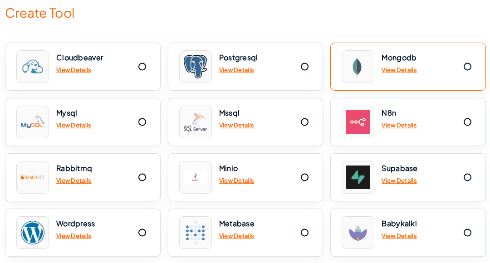
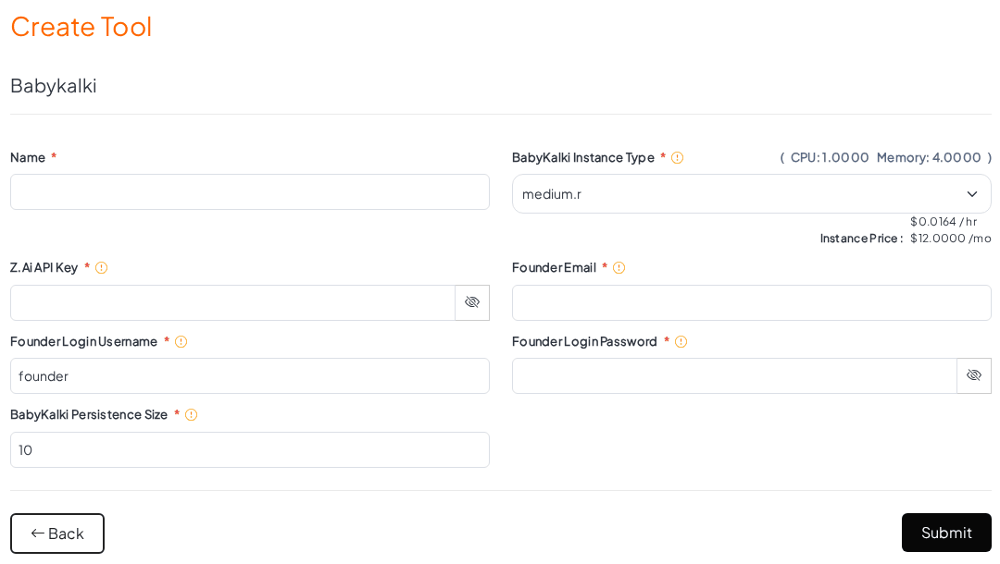
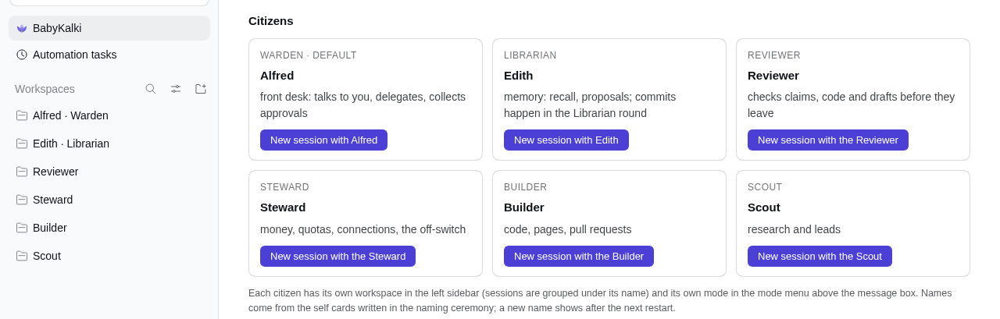

A founder's guide · launched at HES 2026, Hyderabad
You describe it. Your citizens run it. Build it yourself, or one click on Nimbuz.
BabyKalki is six AI citizens on a small cloud server. They keep a diary of everything and a library of checked facts, and ask before they act. There are two ways to get them: Path A — Build it yourself with Claude Code, or Path B — One-click on Nimbuz.
Your own domain · two sign-in locks · off-site backups with a restore drill · a public status page and website · the Telegram community desk · connectors (L4, preview).
A Nimbuz account, your Z.ai Coding Plan key, your email and a strong password. No Claude Code, no domain.
Time
About 5 minutes; running about a minute after Submit.
Per month
Nimbuz medium.r ≈ $12 (≈ ₹1,112, as the form shows), plus your Z.ai plan.
You get
The same six citizens, Library, approvals and private dashboard, on a Nimbuz address behind a founder password. Not yet: status page, off-site backups, Telegram desk, own domain.
I'm Robin Dey. I've spent my recent years learning one thing: stop treating AI as a chatbot, and start treating it as a workforce.
I've built more than a dozen AI agent systems — research teams analysing space-telescope data, agents that audit published AI research, agents researching history and genomics.
My first always-on system, nicknamed "The Beast", ran day and night and reported to my phone. It taught me every hard lesson: agents that forget, servers that fill up, costs that run away — and two copies of the same bot arguing with each other.
All of that became OpenKalki: a society of AI agents with a library for memory, reviewers that check every claim, and humans who approve anything that leaves the building.
But you don't need a datacentre to start. So here is BabyKalki: six AI citizens on a small cloud server, that keep a diary of everything and a library of checked facts, work in your GitHub, Gmail and Telegram, and ask before they act. Build it yourself from your laptop — the first three levels in a day — or start it on Nimbuz with one form. Open, free to use, with credit.
Short bio (50 words)
Robin Dey builds societies of AI agents. He has designed more than a dozen multi-agent systems — for space-telescope research, auditing published AI claims, history and genomics — and founded OpenKalki, an open project for AI agents with real memory, peer review and human approval. BabyKalki is its free, founder-sized version.
02What BabyKalki is
Most "AI agents" are one chatbot with tools. BabyKalki is a small society: six citizens with different jobs, shared rules, and a shared memory. It is a founder-sized version of OpenKalki.
A front desk
Only one citizen — the Warden — talks to you. It routes work, chases it, and asks for your approval.
Three civic offices
The Librarian (memory), the Reviewer (checks every claim) and the Steward (money, keys, safety, off-switch) serve everyone.
Guilds that do the work
Start with a Builder (code, content) and a Scout (research). Add Growth or Ops citizens later — a guild stays small.
It connects — it doesn't self-host
BabyKalki works inside the services you already use: GitHub, Gmail, Calendar, Drive, Telegram (WhatsApp later), Cloudflare. No servers of your own to babysit.
The rulebook — seven lines
You approve anything that leaves the system: an email sent, a PR merged, a post published, money moved.
Every claim says how we know it. The Reviewer can re-check anything.
Facts are corrected, never erased.
No secrets in memory, chat or repo.
A lookup that finds nothing says MISS.
Every task has an owner and a date.
The off-switch is tested monthly.
The one exception to rule 1: the public status page is published automatically from a fixed template that contains only counts and states (no free text, nothing a citizen writes). Anything else public needs your approval. Citizens cannot write to the public folder at all — it belongs to a separate user. Which rules are enforced by code and which are prompt rules only: see Enforced vs advisory.
The tools
Piece
What it does
Where it runs
Claude Code
Your builder on Path A. You describe; it writes the files, deploys, checks, and fixes. Path B does not need it.
Your laptop (Path A)
Z.ai GLM Coding Plan
The brain for your citizens (all on GLM-5.3) on both paths, and for Claude Code on Path A (GLM-5.3, GLM-5.3-Flash). Your own subscription.
Z.ai's cloud
DeepSeek Harness (dsh)
Open-source (MIT) agent harness: sessions, tools, sub-agents, schedules, web UI. Your citizens live here. A developer preview.
Nimbuz
Nimbuz
Low-cost Indian cloud platform that runs your one container: on Path A an application built from the guide's zip, on Path B its one-click BabyKalki tool.
nimbuz.tech
LadybugDB
Embedded graph database (MIT) — one file that holds the Library.
Inside the container
Cloudflare
Path A only: your domain, a tunnel (no open ports), a login gate for the private dashboard, and R2 storage for backups. Free tier.
Cloudflare
03The map
Path A, as drawn: one laptop builds it. One container runs it. Cloudflare is the only front door.
Nothing on the server listens to the internet for the agents. cloudflared dials out to Cloudflare; Cloudflare checks who you are before anything reaches dsh.
agent.yourdomain/bk-login is a one-shot helper behind the same Access app: open it once after each dsh restart to get your dsh login link. It shows the link once, then answers "gone". The link never goes into a log.
hooks.yourdomain is planned: a public route for the WhatsApp webhook. It has to bypass Access (Meta's servers can't log in), so every request is checked against Meta's signature instead. The bridge itself is not in the v1.3.1 files.
Path B's map is shorter. No laptop step, no Cloudflare, no R2. You fill in Nimbuz's form; Nimbuz runs the same BabyKalki container (the same supervisor, dsh with the six citizens, the Library) at https://<name>-babykalki-<env>.ap-south-1a.lb.nimbuz.tech with a valid HTTPS certificate. A founder username and password guard /bk-login and /bk-approve instead of Cloudflare Access; dsh's own login guards everything else. The data and its snapshots live on the tool's own 10 GB volume. There is no www name, so no status page or website yet. See 06 · Path B.
Get it — two paths
04Choose your path: two ways to start
There are two ways to get your own BabyKalki. Both give you the same six citizens, the same Library and diary, the same approvals page and the same private dashboard. They differ in who builds it, where your backups live, and what sits around it.
Path A — Build it yourself with Claude Code
Claude Code on your laptop, running on your own Z.ai GLM Coding Plan, checks the guide's zip with you and deploys it to a Nimbuz application, with your own Cloudflare domain, tunnel and login gate, and off-site backups to Cloudflare R2. Step by step in 05 · Path A.
Path B — One-click on Nimbuz
Nimbuz's own BabyKalki tool: Tools → Babykalki, one form (name, size, your Z.ai key, founder email, username and password, disk size), running in about a minute on a Nimbuz web address. No laptop setup, no Claude Code, no domain. Step by step in 06 · Path B.
Side by side
Path A — Build it yourself with Claude Code
Path B — One-click on Nimbuz
Who it's for
A company memory you cannot lose; founders who want their own domain and to read every file
Trying BabyKalki today: a demo, your first weeks, showing a co-founder
You need
A laptop, Claude Code, your Z.ai GLM Coding Plan, a Nimbuz account, a Cloudflare account (a payment card for R2) and a domain
A Nimbuz account and your Z.ai Coding Plan key. No Claude Code, no laptop setup, no domain
Setup effort
L0–L2 in about a day on your laptop, then about 2–3 hours for L3 with Claude Code: domain, Cloudflare Access, tunnel, R2 bucket, Nimbuz app from the zip, secrets
About 5 minutes: one form. Running about a minute after you press Submit (54 s in our API test)
Cost per month
Nimbuz medium.r ≈ $12 + domain ≈ $10 a year + R2 (free up to 10 GB, card needed), plus your Z.ai plan
Nimbuz medium.r ≈ $12 (≈ ₹1,112; $0.0164 an hour, as the form shows). No domain. Plus your Z.ai plan
Sign-in protection
Two locks: Cloudflare Access (your email code) + dsh's own login
Two locks: a founder username and password (the browser asks, in front of /bk-login and /bk-approve) + dsh's own login. No lockout after wrong passwords (25 tries, all refused) — use a long, unique password
Approvals
/bk-approve behind Access
/bk-approve behind the founder password. A forged Access header is ignored; the CSRF, same-origin and exact-text checks all held (tested)
Backups
Off-site to your R2 bucket every 5 minutes. At every start BabyKalki restores from it and proves the restore
Same disk only: a snapshot at every clean restart (seen in our test) and, by its settings, every hour (to verify). They sit on the tool's own 10 GB volume. Deleting the tool deletes them. A restore was not tested
Data on restart
The app disk is wiped. The data comes back from R2
The disk is kept (a persistent volume; size fixed at install). Facts, sessions and your dsh login survived three restarts
Restart
Status page shows WAITING_FOR_LEASE; citizens pause about 15 s
About 30–40 s offline (the page answers 503), then a clean hand-over (one copy at a time, checked in the logs)
Status page
Public www.yourdomain/status/
None yet: the panel's "Status" link opens a broken address (certificate error). Waiting on a Nimbuz fix
Public website
Optional, on www.yourdomain
No
Custom domain
Yours (agent.yourdomain)
Nimbuz's address only: https://<name>-babykalki-<env>.ap-south-1a.lb.nimbuz.tech. No domain field in the form
Telegram community desk (L6)
Optional, with your bot token
Not offered (no field for it; the desk stays OFF)
Connections (L4: GitHub, Gmail, Telegram to the Warden)
Preview — Claude Code builds them with you
No form fields for more keys; not tested
Off-switch
BABYKALKI_STOP=1 + restart, or the Steward's "STOP ALL" (both passed the dry run)
Stop the tool in Nimbuz (we stopped and started it). The Steward's "STOP ALL": not tested on Path B
Updates
You upload the new zip when the guide is released
Nimbuz updates its catalogue image (kit v1.1 on 22 Nov, so this guide may be ahead). You cannot pick a version. How existing installs get updated: to verify
Logs
Nimbuz app logs
Nimbuz shows no logs for tools. Ask a citizen to read /data/log/
Who runs it
You: your Nimbuz app, your Cloudflare, your bucket
You, in your own Nimbuz account — but the tool and its image are Nimbuz's (see Questions)
Our advice.Path B to try it — a demo, your first weeks. Path A for your company's real memory — off-site backups with a restore drill, your own domain, a status page, the Telegram desk and connectors. We found no way into Path B without the founder password (tested 22 Nov 2026); its gaps are backups on the same disk, no status page, no lockout after wrong passwords, and no choice of version. We have asked Nimbuz for fixes.
Can I start on Path B and move to Path A later?
Yes — that is a sensible way to begin: try BabyKalki on Path B, then build Path A when you want it for real. We have not yet tested moving a Path B Library and diary into a Path A install, so there are no steps for it yet: a migration guide is coming. Until then, treat what you put into Path B as a trial — if something matters, also keep it somewhere you control.
17–19 · Safety, enforced vs advisory, personal data
Yes
Yes, with the Path B notes
05Path A — Build it yourself with Claude Code
This is Path A, level by level. Claude Code on your laptop does the typing; you paste each mission, answer its questions, read what it shows you, and approve. Want the one-form way instead? 06 · Path B — One-click on Nimbuz. Not sure? Choose your path.
Path A after L0–L2 — one day, on your laptopparts tested locallyL2 on a laptop: to verify
Claude Code running on your own Z.ai GLM plan.
The Library and the diary: a MISS says MISS, facts are corrected never erased, secrets are refused, a restore is tested.
Six citizens running in Docker on your laptop — a front desk, a librarian, a reviewer, a steward, a builder and a scout — named by you. (L2 has not yet been run end to end on a laptop; the same image passed on Nimbuz.)
Path A after L3–L5 — always onpreviewL3 dry-run passed
The same container 24×7 on Nimbuz, backed up to your Cloudflare R2.
A private dashboard at agent.yourdomain (or a name you choose), behind two locks, on your phone.
A public website if you want one, and a status page at www.yourdomain/status/ — a fixed template with counts only.
A morning briefing on Telegram, with drafts waiting for your "approve" (L4, preview — Claude Code builds the bridge with you).
A register of every key: what it may do, what it costs, how to switch it off — and a tested off-switch.
Two tracks on every step: Just paste this (you paste a mission into Claude Code; it writes and runs the code, you read what it shows you and approve) and Under the hood (for developers who want to see every file).
Items marked to verify are not yet checked; green tags say where something was checked.
Six levels, plus an optional seventh (L6, a bot for your public community). Don't start a level until the previous one's done when check passes. Claude Code does the typing; you paste the mission, answer its questions, read what it shows you, and approve.
Day one — on your laptop
L0 Claude Code + GLM · L1 the Library · L2 the six citizens. parts tested locally
Then — always on
L3 Nimbuz + Cloudflare + backups dry run passed (real R2 to verify) · L4 connections + approvals · L5 public page + safety drills preview · L6 community desk (optional) running live
0 of 7 Path A levels done
L0
Your builder: Claude Code on your own GLM plan
Goal: Claude Code runs on your laptop, uses your Z.ai GLM Coding Plan as its brain, and has the checked BabyKalki files.
Buy a GLM Coding Plan at z.ai/subscribe. Lite is enough for L0–L2; for six always-on citizens plan on Pro (see Costs). Create a Coding Plan API key and keep it in your password manager.
Install Node.js 22 or newer (Claude Code requires Node >=22; the current LTS is fine). On Windows also install Git for Windows.
Install Claude Code: npm install -g @anthropic-ai/claude-code
Point it at Z.ai — easiest is Z.ai's helper: npx @z_ai/coding-helper (or the manual settings below).
Make an empty folder, open a terminal there, run claude and paste the mission below. It downloads the zip, checks its SHA-256 and unzips it — nobody retypes files.
✅ Done when: inside Claude Code, /status shows the base URL https://api.z.ai/api/anthropic; asking "which model are you?" gets a GLM answer; the zip's SHA-256 matched and every line of SHA256SUMS says OK.
Just paste thisinto Claude Code
Download https://bk.openkalki.org/files/babykalki-files-v1.3.1.zip into this folder. Check that its SHA-256 is a723c25a53591ba5074b230991d8851edebeac5a47541f3ce36c25598329e5fd (macOS/Linux: shasum -a 256; Windows: Get-FileHash). If it is different, stop and tell me. Make a folder called babykalki, unzip it into that folder (the files sit at the top of the zip, with no folder around them), go into babykalki/ and check every file against SHA256SUMS (shasum -a 256 -c SHA256SUMS, or a short Python check on Windows). Read CLAUDE.md there and follow it for the whole project. Then check my setup: tell me the Claude Code version, the base URL and models you are configured with (names only, never print my key), and whether Node 22 or newer, Python 3.10 or newer, Git, rclone (v1.76.0) and Docker are installed. Create BUILD-LOG.md and a .gitignore that ignores .env. Do not install anything yet — show me what is missing and wait.
Under the hood: the Z.ai settings
From Z.ai's Claude Code guide (checked 17 Nov 2026). Put this in ~/.claude/settings.json, replacing the key placeholder. The helper above writes it for you.
These model names have no [1m] suffix, so you get the default 200k context. Add [1m] (e.g. glm-5.3[1m]) only if you need the 1M window — it is expected to use your quota faster to verify. The plan has a 5-hour and a weekly credit limit, shared by everything that uses your key — your laptop and all six citizens.
L1
Memory first: the Library and the diary
Goal: before any agent does real work, the memory exists and is proven: the Library answers MISS honestly, takes a fact, corrects it, refuses what it should refuse, and survives a restore.
✅ Done when: (1) bash tests/run_all.sh passes with no "rclone not found" warning; (2) recall("who are our investors") returns MISS with coverage; (3) a proposed and committed fact returns FOUND with its source; (4) a correction returns SUPERSEDED with the live id, and retiring a made-up id is REFUSED; (5) a planted fake key is REFUSED, while an ordinary commit hash passes; (6) bk_backup.py restore-test passes against a local folder standing in for R2.
Just paste thisinto Claude Code
Level 1: the BabyKalki Library on my laptop. Use the files you unzipped (library_svc.py, library-schema.cypher, bk_secrets.py, secret-patterns.json, bk_chain.py, bk_backup.py, babykalki-diary.mjs) — do not rewrite them; if something does not work, stop and tell me what you found. Make a Python virtual environment with the pinned versions (ladybug 0.22.3, mcp 2.3.0). Run bash tests/run_all.sh and show me the summary. Then prove it by hand, showing each command and its output: recall("who are our investors") must say MISS with coverage; propose and commit a test fact and recall it (FOUND, with source); supersede it with a reason and recall the old id (SUPERSEDED with the live id); retire a made-up id and confirm it is REFUSED; propose a fake key like sk-test-abcdefghijklmnop and confirm it is REFUSED; take a snapshot to a local folder that stands in for R2 and run bk_backup.py restore-test. Start the service on 127.0.0.1:7801 and call one tool through MCP. Log every step in BUILD-LOG.md.
Under the hood: why memory comes first
Memory added later never captures the early decisions — and those are the ones you need. The diary is a dsh (Cordis) plugin that listens to dsh's session/event feed (the same feed its own session log uses), runs the shared secret filter, appends one JSON line in the bk_chain.py hash-chain format, and never throws into the agent's turn. bk_chain.py verifies the diary, the Library's change log and the approvals register with one format, over the stored bytes. The diary's citizen mapping uses the session's working folder (/data/citizens/<name>) to verify on dsh 0.2.2-rc.3.
L2
The society on your laptop
Goal: dsh runs in Docker on your laptop with the six citizens, the shared rulebook, the Library connected, the off-switch working, and the naming ceremony done.
✅ Done when: at http://localhost:3080 the Warden asks "Shall I name the six of us, or will you?"; you ask it to research one competitor; the Scout's answer comes back with sources; a propose_fact appears and the Librarian round commits it (within 10 minutes, or at once when the Warden asks; the status page shows "Librarian round: OK"); bk_chain.py says the diary chain is intact; creating /data/STOP stops dsh within 5 seconds and the status page says STOPPED; the status page says Telemetry to DeepSeek (dsh): OFF, and the dsh web UI Settings has no "Upload Session Log" toggle and the More menu has no "Sign in" (BabyKalki hides both since v0.7; with BK_DASHBOARD=0 the toggle shows and must read off); the preset menu of a new session lists your six citizens. to verify on a laptop (the dry run had no Docker; the same image passed these checks on Nimbuz)
Just paste thisinto Claude Code
Level 2: build the BabyKalki container from the unzipped folder exactly as the Dockerfile says (do not edit the Dockerfile or the files it copies). Keep every version pinned exactly as in the Dockerfile. Run it locally with BK_LOCAL=1, a named volume for /data, and -p 127.0.0.1:3080:3080 -p 127.0.0.1:8080:8080 only (never 0.0.0.0). Ask me to paste my Z.ai key into a local .env that git ignores. Get the dsh login link with docker exec on the container: cat /run/bk/secret/dsh-login.url (a file only the infra user and root can read; the logs redact the link) — open it in my browser yourself or tell me to, but never paste it into this chat or a file. Then run dsh --dump-config in a throwaway copy and confirm: the zai-coding route exists and agent-default-model says zai-coding / glm-5.3 (without that row no citizen can think), the library MCP tools are visible to agents, the diary plugin loaded, and each citizen's AGENTS.local.md is picked up. Test the off-switch: create /data/STOP, show that dsh stops within 5 seconds and the status page says STOPPED, then remove it. Check that nothing goes to DeepSeek: show me the status page line "Telemetry to DeepSeek (dsh): OFF" and, from dsh --profile web --dump-config (run in a throwaway container), that session-telemetry-otel and the other seven rows of cordis.patch.yml section 0 say disabled (session-log-deepseek: enabled false); then tell me to open dsh's web UI Settings and confirm there is NO "Upload Session Log" toggle and NO "Sign in" in the More menu (BabyKalki hides both since v0.7; only with BK_DASHBOARD=0 does the toggle show, and then it must read OFF). Check the separation: the dsh process's environment has no LIBRARY_TOKEN_LIBRARIAN (only LIBRARY_TOKEN_LIBRARIAN_DESK), and /data/run/supervisor-state.json shows librarian_round and citizen_presets ON. If anything is not as the guide says, stop and tell me what you found — do not invent a workaround. Then show me the preset menu in a new dsh session (six citizens), open the Warden's preset and let me do the naming ceremony; afterwards ask the Warden to request a Librarian round (it creates /data/run/librarian-requests/NOW) and show me the round's result line in the status page and /data/diary/librarian-round/. For approvals on my laptop (no Cloudflare Access there) just show me that request_approval works and that no citizen tool can approve; the approvals page comes at L3. I live in [city] and use [language].
Under the hood: how six citizens live in one dsh
Rulebook:$DSH_HOME/AGENTS.md is loaded for every session (dsh's user-global instructions chain).
Picking a citizen (v0.5): v0.4's web UI started every session in the same folder, so a session only "knew" it was the Librarian from your first message (found live, 19 Nov). v0.5 adds six agent presets, one per citizen, to dsh's preset menu for a new session (BK_CITIZEN_PRESETS=1, the default). Each preset is dsh 0.2.2-rc.3's own standard preset plus a persona ("You are the Scout … read /data/citizens/scout/AGENTS.md and your self card, work in /data/citizens/scout/work") and only that citizen's Library connector. Display names come from the self cards ("Edith · Librarian") and follow a rename at the next restart. Checked offline against a real dsh 0.2.2-rc.3 from npm with a stand-in model: the six presets register with no errors, a Scout session's tool list holds only library-scout, a plain standard session has no Library at all, and the web Librarian can list proposals but its commit is REFUSED. to verify on Nimbuz: how the menu looks, and a real GLM turn in each preset. A preset is a convenience, not a lock — see Enforced vs advisory. If presets misbehave, BK_CITIZEN_PRESETS=shared keeps the menu without connectors (all rows shared, as v0.4), 0 removes it; if dsh fails to start twice with presets the supervisor drops them for that run by itself (FALLBACK on the status page).
The Librarian round (v0.5): the Librarian's full Library key — the one that can commit — is not in the web dsh any more. A separate headless dsh runs as its own Linux user (bklib) in /data/citizens/librarian/round with its own settings (cordis.librarian.yml) and ONLY ZAI_API_KEY and that key: every 10 minutes (BK_LIBRARIAN_EVERY_MIN; skipped, with no model call, when nothing is pending) and at once when the Warden creates /data/run/librarian-requests/NOW. One round at a time, 10 minutes at most; its result line goes to the status page and /data/diary/librarian-round/. In the web UI the Librarian can recall and propose (a read-and-propose "desk" key). After the naming ceremony you do not need to open the Librarian's session: the Warden asks for a round.
Each citizen: a working folder with its own rules (AGENTS.md), self card and Library token — and, in v0.5, its own preset in dsh's menu. It is not a separate dsh agent: dsh calls every session "lead", and the role comes from the preset (or, without presets, the folder). A session started in work/ picks up the parent folder's AGENTS.md (seen in the dry run). The self card is written by the Librarian to AGENTS.local.md in the same folder, dsh's default local-instructions file to verify.
Delegation: the Warden uses dsh sub-agents; repeatable jobs use dsh workflows; timed jobs use dsh's schedule tools (cron with time zone) — dsh's headless profile has no schedule tool (dry run), the web profile, which BabyKalki runs, has one (the Warden reported it live on 19 Nov); the first scheduled delivery is to verify. Also to verify: that a delegated child can be pointed at another citizen's folder.
Models: one hand-declared llm-pi-ai route, zai-coding, on Z.ai's Anthropic-compatible endpoint, models glm-5.3 and glm-5.3-flash (200k context), key from the ZAI_API_KEY environment variable — plus an agent-default-model row that selects zai-coding / glm-5.3 (v0.3 forgot it, so dsh kept its DeepSeek default and failed). Verified in the dry run: all six citizens answered on GLM-5.3. Choosing Flash per citizen is a later item.
Users: the supervisor starts the tunnel, backup and status publisher as a separate user whose environment the citizens' user cannot read; /opt/bk (the BabyKalki code) is root-owned and read-only. Verified live on Nimbuz (18 Nov 2026).
Pins: the Node base image by digest; dsh 0.2.2-rc.3 (newest RC on npm's next tag, 13 Nov 2026); cloudflared 2026.11.1, rclone v1.76.0 and the official GitHub MCP server v2.2.0 (github/github-mcp-server), each with a SHA-256 check.
Sandbox: dsh's file sandbox needs bubblewrap with a capability most hosted containers do not grant, (Nimbuz does not, we checked), so BabyKalki runs dsh in danger-full-access mode and treats the container as the sandbox — which dsh's own docs recommend for whole-environment isolation. Consequence: never mount anything precious into it.
Nothing goes back to DeepSeek (v0.5): verified on dsh 0.2.2-rc.3 (19 Nov 2026, every outgoing connection logged): with v0.4's settings, clicking 👍/👎 or More → Feedback → Submit sent the conversation log to dsh-otel-collector.deepseeksvc.com — even with GLM (row session-telemetry-otel, default FEEDBACK_ONLY). With DSH_TELEMETRY_MODE=DISABLED the same click reached Z.ai only. BabyKalki now locks it three ways: the image sets DSH_TELEMETRY_MODE=DISABLED and DSH_TELEMETRY_OTLP_URL=http://127.0.0.1:9/; the supervisor forces them again in dsh's environment whatever your Nimbuz settings say (unless BK_ALLOW_TELEMETRY=1); and cordis.patch.yml section 0 switches off eight rows (session telemetry, the "Upload Session Log" setting, plugin inventory, DeepSeek account sign-in ×2, DeepSeek web search, product analytics ×2) — --dump-config showed them all off with no new errors. 👍/👎 and Feedback now stay in your own session log. Since v0.7 "Sign in", the DeepSeek account cards, 👍/👎 and the "Upload Session Log" toggle are hidden in the web UI (with BK_DASHBOARD=0 they come back: never sign in with a DeepSeek account, and check that the toggle shows OFF). Still sent, on purpose: one short call per new session to Z.ai for its title; opening the Plugins page reads the npm registry.
Hard truth: all six citizens share one dsh process and one filesystem. Separation between citizens is by role, per-citizen Library tokens and token scopes, and every Library write is logged and hash-chained so mistakes are visible. That stops mistakes; it is not a wall against a citizen with a shell. Hard walls between citizens are an OpenKalki feature.
L3
Always on: Nimbuz + Cloudflare + backups
Path A's always-on step. Your own domain, the Cloudflare login gate, off-site backups to R2 and the guide's zip. It takes about two to three hours and is the safest place for a company's memory. If you only want to try BabyKalki, Path B — One-click on Nimbuz gets you running in minutes instead (backups on the same disk, no domain). Comparison: Choose your path.
dry run passedreal R2: to verifyGoal: the same container runs 24×7 on Nimbuz; your private dashboard opens on your phone at agent.yourdomain (or the name in BK_AGENT_HOST) behind two locks; backups go off-site to Cloudflare R2 and a restore is proven.
✅ Done when: (1) on your phone, agent.yourdomain asks for the Cloudflare login, then shows dsh; (2) in a private window with no login it never shows dsh; (3) Nimbuz logs show the tunnel connected; (4) restore drill: destroy /data (a Nimbuz restart does this), the container restores from R2, bk_backup.py restore-test passes (counts and hashes match the manifest); your dsh login survives the restart (v0.7: a 30-day cookie whose secret is backed up — checked locally, to verify live; Cloudflare Access may ask for your email code again, that is normal); dsh schedules survive a restart to verify; (5) with a wrong R2 key the container refuses to start the citizens instead of starting empty (WAITING_FOR_BACKUP — seen in the dry run); (6) during a restart your status page says WAITING_FOR_LEASE for up to a minute, then RUNNING, and the fact you added just before the restart is still there (dry run: 35 s wait, citizens down ≈13 s, a fact from 1 minute before the restart survived).
Three Nimbuz traps the dry run hit — so you don't. 1 · Dockerfile at the top of the zip. Upload the guide's zip unchanged (this zip has the files at the root). If you re-zip, zip from inside the folder. Nimbuz "FAILED" with no build logs at all = the Dockerfile is not at the zip root.2 · Secrets are replaced, not merged. A Nimbuz update that includes Secrets must include all of them (ZAI_API_KEY, TUNNEL_TOKEN, both RCLONE_CONFIG_R2_* keys …) — adding one on its own deletes the rest (the backup keys vanished and BabyKalki stopped at WAITING_FOR_BACKUP). Leave Secrets out of an API update to keep them. An update without new source code is a restart only (~30 s). 3 · Name clash? If agent. is already used on your domain, pick another name and set BK_AGENT_HOST; the status page can be any hostname.
Just paste thisinto Claude Code
Level 3: take BabyKalki live. First time on Nimbuz? I have no app yet: walk me through the Nimbuz portal — create a project, an environment in it, and an application from a zip upload (Dockerfile build), port 8080, health endpoint /health, size medium.r — then show me where the portal shows the projectId, environmentId and app id, and write those three ids (not secrets) into BUILD-LOG.md. If you use Nimbuz's API from my laptop, it logs in with my Nimbuz username and password and gets a session token: I type them into my terminal's environment for this session only — never into a file, the repo or this chat; the portal is always the fallback. Then guide me step by step through cloudflare-setup.md in this order: domain, a Zero Trust Access application for agent.MYDOMAIN that allows only [email], then the tunnel with three routes in this order (agent.MYDOMAIN path ^/(bk-login|bk-approve(/.*)?)$ -> 127.0.0.1:8081, agent.MYDOMAIN -> 127.0.0.1:3080, www.MYDOMAIN -> 127.0.0.1:8080), then the R2 bucket and a token limited to that one bucket. I will paste every secret into Nimbuz Secrets myself — tell me the NAME for each (from .env.example), never ask me to paste a secret into this chat. Then prepare the Nimbuz deployment: upload the guide's zip UNCHANGED — its Dockerfile is already at the top of the zip (if you must re-zip, zip from inside the folder; if Nimbuz says FAILED with no logs, the Dockerfile is not at the zip root). Use the portal upload, or the API recipe in README.md (the upload call is undocumented, so fall back to the portal if it fails). Nimbuz REPLACES the whole Secrets map: any API update that includes secrets must include ALL of them — never add one secret on its own; leave secrets out to keep the current ones. If agent.MYDOMAIN is already taken, use another name everywhere above and set BK_AGENT_HOST to it. port 8080, health endpoint /health, instance medium.r (1 vCPU, 4 GB), public networking OFF, BK_BACKUP_EVERY_MIN=5. Never print a Nimbuz deployment JSON — it contains my Secrets in plain text. Set BK_FOUNDER_EMAILS to [email] (the email Access lets through). After it is Active, tell me to open https://agent.MYDOMAIN/bk-login once to get my dsh login link (it is shown once and never logged). Then the approvals check: ask the Warden to request approval for a one-line test post; I open https://agent.MYDOMAIN/bk-approve, read the full text and press Approve; show me list_approvals with the decision A-… and check_approval saying MATCH, authorises true. Show me that /bk-approve from a private window (no login) never shows the page. Then run the five "done when" checks and show me the evidence. For the restore drill, restart the app, show that it restored the newest COMPLETE snapshot from R2 and that bk_backup.py restore-test passes, and check whether dsh schedules and my login survived. During the restart, show me the status page saying WAITING_FOR_LEASE and then RUNNING. Do not trust Nimbuz's own status field — use the status page and the logs.
Under the hood: the two locks, backups and the Nimbuz details
Lock 1 — Cloudflare Access: nobody reaches the tunnel route without your email one-time PIN or Google login. Add the One-time PIN login yourself — in the dry run even a Zero Trust organisation made long ago had none. Verified: a visitor with no login gets the Access sign-in page, never dsh.
Lock 2 — dsh's own login: every dsh process mints a launch token; the login link swaps it for a signed, HttpOnly cookie (30 days by default). Without it every API call is refused. The link is redacted from every log; after each dsh restart you open https://agent.yourdomain/bk-login (behind the same Access app) once — it shows the link once, then answers "gone". Verified behind Access: dsh answers 401 without its own login. /bk-login refuses Cloudflare Access service tokens (no email, no person) — by design; don't "fix" that with a Bypass rule.
The fence: dsh refuses to bind every interface (0.0.0.0) by design, so it stays on 127.0.0.1:3080. Its Host/Origin fence only accepts names you list, so the supervisor passes --trusted-host and --public-url with your private hostname — agent.yourdomain, or BK_AGENT_HOST if you set one (v0.4). Checked on dsh 0.2.2-rc.3 in the dry run: the fence accepted the configured name. Cloudflare Tunnel keeps the browser's Host header and carries WebSockets, which dsh's reverse-proxy guide requires.
Backups that can't destroy data:bk_backup.py runs a snapshot → push cycle; it copies to R2 and never syncs (so an empty /data can't delete the off-site copy); each snapshot gets a COMPLETE marker written last; restore takes the newest snapshot that has one; it refuses to start or push when R2 is unreachable or the restore is unverified; the restore test compares counts and hashes against the snapshot's manifest; old snapshots are pruned. Tested with local stand-ins and on Nimbuz with a MinIO bucket standing in for R2 (also on a folder inside the bucket: BK_REMOTE=r2:<bucket>/<folder>); real R2 to verify — Cloudflare asks for a payment card before the first R2 bucket, even on the free tier. With a bucket-scoped R2 token, rclone needs its no_check_bucket option.
How Nimbuz deploys: it builds your Dockerfile from GitHub/GitLab or an uploaded zip (up to 500 MB) and lets you set port, health endpoint, environment variables and secrets. No repo needed — see the Nimbuz box below.
Prices used here: Nimbuz's public catalogue (17 Nov 2026): medium.r 1 vCPU / 4 GB = $0.01643836/hour ≈ $12.00 a month (the size we tested live); small.c 1 vCPU / 2 GB ≈ $8.56; medium.c 2 vCPU / 4 GB ≈ $17.12.
Under the hood: Nimbuz, checked live on 18–19 Nov 2026
Deploy without a repo: upload the zip in the Nimbuz portal, or let Claude Code do it through Nimbuz's API. The upload call is not in Nimbuz's public docs (its path really is spelled artificat), so it may change — the recipe is in the zip's README.md; if it fails, use the portal upload. The @nimbuz/cli package their docs mention does not exist on npm (404 when we checked). The Dockerfile must be at the top of the zip (this zip is). Secrets: an API update with secret replaces the whole map; without secret they are kept; without sourceCode it only restarts. After uploading to a paused app, send resume — otherwise the new build sits at 0 copies.
Size: medium.r (1 vCPU / 4 GB, ≈ $12 a month; catalogue rate $0.01643836 an hour). small.m (0.25 vCPU) was throttled even when idle; boot peaks at about 1.07 GB, then settles near 450 MB.
Storage is wiped by every restart, rebuild and out-of-memory kill. So the supervisor restores from your off-site copy at every start — this is mandatory, not optional. Set backups to every 5 minutes (BK_BACKUP_EVERY_MIN=5): an out-of-memory kill gives no warning, so there is no final snapshot.
Restarts overlap: Nimbuz starts the new copy before it stops the old one, so for about 20 s two copies run. The boot lease (a small lease.json in your bucket, since v0.3) makes the new copy wait: your status page shows WAITING_FOR_LEASE for up to a minute, the citizens pause about 15 s (13 s in the dry run), nothing is lost (the same happens after a resume; a few seconds with no status page is normal). Never delete lease.json while BabyKalki runs.
Health: Nimbuz's own status field is not reliable (it can say STARTING for ever). Watch your status page and the logs instead — logs run 20–50 s behind.
Outbound network checked: Z.ai, GitHub, Telegram, Cloudflare tunnel (QUIC), the R2 endpoint, npm and PyPI.
Where it runs: the container runs in Mumbai; uploaded zips and built images are stored in AWS Singapore.
Root and users: the container may run as root and switch to a second user, so the infra/citizen user separation works. There is no capability for dsh's own file sandbox — expected; the container is the sandbox.
Demo only: Nimbuz's MinIO tool can stand in for R2 (that is how we tested). But then your "off-site" copy lives with the same provider — use R2 for anything real.
Vendor note: Nimbuz is a young platform. The same image runs on any Docker host, so you are not locked in.
Two Nimbuz facts you must know (checked live, 18 Nov 2026). 1 · Storage is wiped on every restart and every out-of-memory kill — applications get no persistent disk. BabyKalki treats /data as disposable and your off-site copy as the real one: at every start it restores the newest complete snapshot before any citizen starts. With 5-minute backups you can lose up to 5 minutes after a crash; a clean restart loses nothing. 2 · Your Nimbuz login is the master key. Nimbuz's API returns your Secrets in plain text to anyone logged in as you. Turn on 2-factor login and never give the Nimbuz login to a citizen or put it anywhere a citizen can read.
L4
Connected: your phone, inbox, code and calendar
previewGoal: the Warden reaches you on Telegram; the citizens work inside GitHub, Gmail, Calendar and Drive with the narrowest permissions; every connection is in the Register; the 08:00 briefing runs. The briefing and triage need dsh schedules: the Warden has a schedule tool in the web-UI session (seen live, 19 Nov 2026; the headless profile has none); the first scheduled delivery is to verify.
Telegram first. Telegram is set up here, at L4. WhatsApp needs Meta business verification, which usually takes longer than a weekend — start with Telegram and add WhatsApp later. The chat bridge (Telegram or WhatsApp ↔ the Warden) is not in the v1.3.1 files: Claude Code writes it with you at this level to verify. (The community desk (since v0.5) is a different bot: public, for your group, with no line to the Warden.)
✅ Done when: (1) the 08:00 IST briefing arrives on Telegram; (2) a reply you asked for is waiting in Gmail Drafts (not sent); (3) a test PR exists, and a push to main is refused — or, on a private repo without a paid plan, the agents work in a separate repo (see below) to verify; (4) /connections in a citizen's session (the Steward's list_connections) shows every key with owner, scope, cap, expiry and how to revoke it (green / amber / red).
Just paste thisinto Claude Code
Level 4: connect BabyKalki to my services, one at a time, with the narrowest permission that works, and add each to the Connections Register before using it. Order: (1) a Telegram bot for the Warden — only my chat id may talk to it. The chat bridge is not in the guide's files: show me your design first (Telegram long polling, no public route needed), then build it as a small separate process. (2) GitHub: repo [repo], a fine-grained token on that ONE repo with Contents: read and write, Pull requests: read and write, Issues: read and write. Check whether main can really be protected: GitHub Free does not enforce branch protection on private repos. Tell me my options (public repo with protected main; GitHub Pro; or a separate private agents repo that the token is limited to, which I pull from myself) and wait for my choice. Wherever main is protected, tick "Do not allow bypassing the above settings" — the token acts as me. (3) Gmail read + drafts only, Calendar read-only, one Drive folder. For each: tell me exactly what to click, which secret NAME to create in Nimbuz, then test it and show the evidence. Then schedule the Warden's 08:00 IST briefing and a 2-hourly inbox triage in work hours (drafts only) — first check that the Warden really has a dsh schedule tool in the web profile (the guide marks schedules "to verify"); if it has none, stop and tell me. Nothing is ever sent, merged or published without my approval.
Under the hood: bridges, scopes and GitHub
Chat bridge: dsh has web, SDK, ACP and headless surfaces but no Telegram/WhatsApp surface, so the bridge is a small extra process that forwards your messages to the Warden's session. Telegram uses long polling (no public route). WhatsApp's Cloud API calls a webhook, which needs the public hooks.yourdomain route: it bypasses Access, so the bridge must check every request's Meta signature. Not in the v1.3.1 files; to verify on dsh 0.2.2-rc.3's SDK.
Secrets reach tools explicitly: dsh strips every environment variable whose name contains KEY, TOKEN, SECRET or PASSWORD from child processes. A connector that needs one gets it through its own env: block in cordis.patch.yml — so each tool sees only its own key.
GitHub: the official GitHub MCP server (github/github-mcp-server v2.2.0). A token that can push branches needs Contents: write. Branch protection and rulesets on private repos are not available on GitHub Free (GitHub Docs, "About protected branches", checked 17 Nov 2026: Free covers public repos only; private repos need Pro, Team or Enterprise). The real lock is that the token can reach only one repo; main is locked only if protection is enforced. to verify in the dry run that a push to main is refused.
Gmail: use the Gmail API scopes for reading and composing drafts; never the full-mail scope. You press Send. to verify: exact connector and scope names.
WhatsApp: official WhatsApp Business Platform (Cloud API) only. Unofficial automation of a personal number breaks WhatsApp's terms and gets numbers banned.
L5
Public face and safety drills
previewGoal: the status page you have had since L3 (www.yourdomain/status/, or / if you ship no website) is checked; optionally your own website goes up; the human mirror exports nightly (planned — Claude Code builds it with you); the off-switch and restore drills are scheduled.
✅ Done when: (1) www.yourdomain/status/ (or / if you ship no website) shows today's counts and states, and a citizen that tries to write to the public folder gets "permission denied"; (2) the nightly mirror appears as a pull request to your repo's knowledge/ folder; (3) the off-switch works the Nimbuz way (there is no shell into the container): BABYKALKI_STOP=1 + restart keeps dsh off and the status page says STOPPED; asking the Steward to "STOP ALL" stops dsh and latches the stop; BK_CLEAR_STOP=1 + restart brings everything back — then set BK_CLEAR_STOP back to 0 (both stops passed in the dry run); (4) the weekly restore test runs (the supervisor runs it against the off-site copy; on a brand-new system with 0 facts it reports FAIL on purpose until the Library holds its first fact).
Just paste thisinto Claude Code
Level 5: give BabyKalki its public face and its safety drills. (1) Check the public status page I already have at www.MYDOMAIN/status/ (bk_status.py publishes it from the fixed template: counts and states only, no free text). Show me that a citizen cannot write to the public folder. Optional: help me put my own website in site/www/ (README "Your public website") and test it locally with bk_static.py --www before I upload. Do not add anything to the template without asking me — it is the one thing that goes public without my approval. (2) Build with me the nightly human mirror (planned — not in the files yet): the Librarian exports facts and decisions to the knowledge/ folder of [repo] as a pull request. (3) Off-switch drill, the Nimbuz way (no shell): (a) I set BABYKALKI_STOP=1 in Nimbuz and restart — show me dsh did not start and the status page says STOPPED; I set it back to 0. (b) I ask the Steward to "STOP ALL" — show me dsh stopped and the stop is latched. (c) To undo: I set BK_CLEAR_STOP=1 and restart, you show everything came back, then remind me to set BK_CLEAR_STOP back to 0 (otherwise every later restart silently undoes a Steward stop). Schedule this drill for the 1st of every month, and write the hard stop into BUILD-LOG.md: revoke the Z.ai key. (4) Schedule the weekly restore test for Sundays and the monthly connections review. Then give me a one-page summary of my BabyKalki: citizens, connections, costs per month, and how to switch everything off.
Under the hood: what "template-only" means
bk_status.py collects numbers and states only (system state such as RUNNING or STOPPED, live facts, proposals waiting, open and overdue tasks, connections and red ones, backup state, last backup, last restore test, diary files anchored off-site), fills a fixed HTML template and writes it to /data/site/public as the infra user. Citizens can't write there. bk_static.py serves that folder on port 8080 with no directory listing, no symlinks and no dotfiles, reached only via the www tunnel route. No text a citizen wrote can reach the public page. Anything else you want public — a blog post, a changelog — goes through your approval like any other outgoing thing. The private dashboard stays dsh itself.
L6
Community desk: a Telegram bot for your public group (optional)
live in t.me/babykalki since 20 Nov 2026Goal: your public Telegram group has a desk bot that welcomes new members, answers questions in plain words from the public guide (and general startup tips, clearly marked), remembers the conversation, removes spam, and hands everything it can't answer — and every /report — to a human: your moderators' chat and the Steward (as a Library task). It is not a citizen and not the Warden's private chat with you: it runs as its own Linux user with its own two secrets, no tools, no shell, no access to your citizens, their keys or your Library's facts. New in v0.5: bk_telegram.py + community-kb.md.
A public bot serves other people — so we recommend a separate pay-per-use model key with a spend cap. No key is fine: the desk then replies with the best guide section and a link. With a key (default: Z.ai pay-per-use, glm-5.3-flash, $0.15 / $0.50 per million tokens in / out on 19 Nov 2026) it really talks (v1.1, "Desk v2"): every question goes to the model with the best guide sections as context, the recent conversation and what members shared about themselves, so follow-ups like "say it in your own words" work; it answers in plain words and in the member's language, and hands BabyKalki facts it doesn't have to a human. Capped at BK_COMMUNITY_DAILY_CALLS (1000) a day, 12 a minute, 20 per member an hour, 700 tokens an answer. Prototype only, for a private test chat with yourself:BK_COMMUNITY_USE_CODING_PLAN=1 lets it reuse your GLM Coding Plan key on the plan's Anthropic-compatible endpoint. Z.ai's Coding Plan terms do not allow bots that serve other people, and the bot then spends the same quota as your citizens — it is off by default. For any real group use retrieval-only (no key) or a separate pay-per-use key. Honest note: at launch, the BabyKalki group's own desk runs with this prototype setting on the founder's key — his call, stated here so you can judge it; the recommended setup for a group is the one above.
✅ Done when: (1) the status page shows Community desk: ON; (2) a test account joining the group gets one short welcome, and a link it posts in its first day is deleted with a warning; (3) @yourbot how much does it cost? gets a short plain-words answer (a follow-up without the mention is understood), and a question about your project the guide can't answer gets "I don't know — I've asked a human" while your moderators' chat and the Steward's task list both receive it; (4) /mute from a non-admin is refused, from an admin it works; (5) BABYKALKI_STOP=1 + restart shows Community desk: OFF. to verify: all five, one by one, live on Telegram. So far: (1) passed on the founder's instance (Community desk: ON, first escalation reached the Steward as a task); the rest are checked by the automated tests (fake Telegram, fake model).
Just paste thisinto Claude Code
Level 6 (optional): turn on the Telegram community desk for my public group, following the README section "Telegram community desk". Step by step, and wait for me at each one: (1) tell me exactly what to do in @BotFather (/newbot; /setprivacy → Disable) — I create the bot and put its token into the Nimbuz Secrets myself as BK_TELEGRAM_BOT_TOKEN; never ask me to paste it here. Remind me that Nimbuz replaces the whole Secrets map, so the update must include every existing secret. (2) I add the bot to my group as an admin with only "Delete messages" and "Ban users", and to a small private moderators' group; help me find the two chat ids and my user id, then set BK_TG_GROUP_IDS, BK_TG_ADMIN_CHAT_ID, BK_TG_ADMIN_IDS and BK_COMMUNITY_GUIDE_URL [guide link]. (3) Ask me whether I want written answers: recommended is a SEPARATE pay-per-use model key with a spend limit, which I set as BK_COMMUNITY_LLM_KEY; for a prototype I may instead choose BK_COMMUNITY_USE_CODING_PLAN=1 (reuses my Coding Plan key — remind me it is personal-use and shares my citizens' quota); or no key at all (retrieval-only). Have the Steward register both keys in the Connections Register (names only). (4) Run tests/test_telegram.py and show me the summary. (5) Restart and walk me through the five "done when" checks with a second Telegram account, showing me the status page and the Steward's task list. Do not change the bot's prompt, link allow-list or checks without asking me.
Under the hood: how the desk stays safe with hostile input
Long polling, no public route: the desk asks Telegram for new messages (getUpdates); nothing listens for the internet, no new hostname. It remembers the last update it handled in /data/community (backed up), so a restart never answers twice.
Its own user and only its own secrets: the supervisor starts it as bkcomm with BK_TELEGRAM_BOT_TOKEN, BK_COMMUNITY_LLM_KEY and its own Library token — and removes those from what the citizens get. Its Library role, community, may only add a task for the Steward (and propose a fact); every read tool refuses it.
Answers (v1.1): keyword (BM25) search picks the ~5 best sections of community-kb.md (generated from this page) and your community-kb.founder.md, plus the overview and the six citizens — as context, not a gate. The model gets them with the recent conversation, member notes and the admins' taught answers, all member text wrapped as data. It must never invent BabyKalki facts: when one is missing it adds [[ESCALATE: …]], which the desk strips and acts on. Without a key: the best section with its text, or a human.
What the bot remembers (v1.1): the last 48 h (30 messages) of the conversation it can see in each chat and topic, and up to five short notes you share about yourself (name, what you build, city, interests — never phones, emails, links, keys, money or health). Plus the answers your admins taught it (/teach question | answer, or an admin's reply to an escalation; each also becomes a Steward task). /memory shows what it keeps about you, /forget erases it. Stored in /data/community/memory.json (0600, backed up); BK_COMMUNITY_MEMORY=0 turns it off.
Output checks on every message: the shared secret filter (exact hashes of all your secret values + known key formats), a canary check, and a check that its own RULES are not echoed word for word (quoting the guide is fine); links outside BK_TG_ALLOWED_LINK_DOMAINS are cut; a length cap, plain text only, link previews off. A blocked answer becomes the guide section (with its text) instead. Tested with a deliberately obedient fake model that tries to print its prompt and the bot token.
Spam: links, forwards and media from members in their first BK_TG_NEW_MEMBER_HOURS (24) are deleted with one warning; more than 6 messages in 15 s is a flood; three strikes in a day = muted for 24 h and your moderators are told. Without admin rights it says so once and keeps answering.
Limits: per member (20 answers an hour, 3 escalations a day), per bot (20 messages and 12 model calls a minute, 40 escalations a day), per day (1000 model calls, 700 tokens each; thinking off). Other bots, channel posts and groups not in BK_TG_GROUP_IDS are ignored.
What it keeps: counts per day (into the diary), member ids with join times and strikes for a day or two, its memory (above), and the text of escalated messages — in your moderators' chat and the Steward's task.
06Path B — One-click on Nimbuz
tested end to end, 22 Nov 2026 Since 21 Nov 2026 Nimbuz has a BabyKalki tool in its catalogue: you fill in one form and Nimbuz runs BabyKalki for you — the six citizens, the Library, approvals and the private dashboard (kit v1.1 when we tested) — on a Nimbuz web address, behind a founder password. No laptop setup, no Claude Code, no domain, no Cloudflare, no zip. We tested it end to end on 22 Nov 2026: two installs from the form, two from Nimbuz's API, a founder session in a browser, restarts and a security check. Everything here is what we saw in that test; anything we did not check says to verify. How it compares with Path A: Choose your path.
Our recommendation. Path B is a good way to try BabyKalki today, for a demo or for your first weeks. We found no way to get in without the founder password. Keep Path A (05) for a company memory you cannot lose: Path B keeps its backups on the same disk as the data, so if you delete the tool you lose the backups too, and it has no status page yet. We have asked Nimbuz for both fixes.
What you need
A Nimbuz account at app.nimbuz.tech, with a project and an environment in it (we used region ap-south-1, Mumbai).
Your own Z.ai GLM Coding Plan and an API key from it — the citizens use it for every answer (we tested with a Coding Plan key; Lite or Pro: see Costs).
Your email, and a long, unique password from a password manager.
About five minutes. Nimbuz bills the size you pick: medium.r ≈ $12 a month (≈ ₹1,112, as the form shows).
Step by step
Nimbuz account and an environment. Sign up at app.nimbuz.tech and create a project and an environment in it. Turn on 2-factor login if your account offers it: your Nimbuz login can read your Z.ai key and founder password in plain text through Nimbuz's API.
Tools → + New Tool → Babykalki. "View Details" shows Nimbuz's short description; tick the round button on the Babykalki card.

Tools → Create Tool on Nimbuz (22 Nov 2026). Babykalki is the last card.
Fill in the form (screenshot below, empty):
Name — lowercase letters, digits and hyphens, e.g. mycompany. It becomes part of your web address. Don't put "babykalki" in it — Nimbuz adds that itself.
Instance type — keep medium.r (1 vCPU / 4 GB, $0.0164 an hour). The form shows the price of each size.
Z.ai API key — your own key from your Z.ai GLM Coding Plan. The citizens use it for every answer.
Founder email — your email. The approvals page shows "Signed in as" this address. It works as a label: in our test no email was sent and nothing asked for an email code.
Founder login username (default founder) and password — 8 to 128 characters. Use a long, unique one from a password manager: it is the only lock in front of your login link and your approvals.
Persistence size — keep 10 (GB). It cannot be changed later.

The form, empty. Never paste your key or password into a chat or a screenshot.
Submit. The tools list shows your address (<name>-babykalki-<env>.ap-south-1a.lb.nimbuz.tech). Wait about a minute until it says Running.
First login
Open https://<your address>/bk-login. The browser asks for the founder username and password, then the page shows "Open dsh and sign in". Click it once, in the same browser. The link is shown only once: reloading /bk-login answers "Gone". dsh then keeps you signed in with a 30-day cookie; in our test it survived three restarts, so you only need /bk-login again on a new browser or device. Lost it? Restart the tool (stop it and start it again in Nimbuz) and open /bk-login again. On your first visit dsh shows a one-time "Preview Notice" — close it.
Naming ceremony and your first hour
Meet your citizens. The BabyKalki panel opens, with the Warden as the default. Say hello. The Warden runs the naming ceremony (two name ideas per citizen, in your languages); the names show after the next restart. seen in our test
Give the Library its first fact. Type /remember and a fact about your company; the Librarian round commits it within minutes. Ask for it back a little later. In our test a fact was committed and was still there after three restarts.
Try an approval. Ask the Warden to draft something that would need your OK. When a citizen asks for approval, open https://<your address>/bk-approve, read the whole text and press Approve or Reject. In our test the Warden filed a request, we approved it, and the Librarian confirmed the decision matched the exact text.
Then use it. Everything in Citizens, Memory and Your private dashboard (the panel, workspaces and slash commands such as /brief) applies. The use cases need connectors that Path B cannot add yet, so start with the chat-only parts: drafting, reviewing and remembering.
Limits — know these before you rely on Path B
1 · Backups are not off-site. If the volume is lost or the tool is deleted, the Library, the diary and every snapshot are gone. Nimbuz has no backup-destination field yet. Snapshots are written at every clean restart; the hourly snapshot and a restore from a snapshot are to verify.
2 · No status page. You cannot see RUNNING / STOPPED or the backup age at a glance (the panel's "Status" link is broken). Ask the Steward (/brief) instead.
3 · The password is the only outer lock. There is no email code as with Cloudflare Access, and no lockout after wrong tries. Use a long random password, and don't share the address.
4 · Not offered yet: your own domain, a public website, the Telegram community desk, and fields for connector keys.
5 · Updates are Nimbuz's. The tool ran kit v1.1 on 22 Nov 2026 (this guide is v1.3.1); you cannot pick a version, and how existing installs get updated is to verify.
6 · No logs view for tools in Nimbuz; ask a citizen to read /data/log/.
Resize, stop, delete
Change size: Tools → ⋮ → Edit → change the instance type → Update. About 35 s offline; your data and login stay.
Stop: stop the tool in Nimbuz (⋮ → Stop) and start it again later; the data stays on its volume. While it is stopped no citizen runs.
Delete:deleting the tool deletes its volume, so all your data and every snapshot go with it. Do it only when you are done — for example after moving to Path A.
Hard stop: revoke the Z.ai key in your Z.ai account; then no citizen can think.
Moving to Path A later
When you want your own domain, off-site backups and the Telegram desk, build Path A. Moving your Path B Library and diary across is not tested yet — a migration guide is coming.
Under the hood: what we checked on 22 Nov 2026
Without the password, every path refused: /, the dsh API and websocket → 401 (dsh's own login); /bk-login, /bk-approve and their path tricks (//, %2F, /./, /x/../) → 401 (founder password). HTTPS has a valid certificate; http:// redirects to https://.
Approvals: a forged Cf-Access-Authenticated-User-Email header got 401 without the password, and with the password the page still named the configured founder. Approve without a CSRF token, with another site's Origin, or with a changed text hash → 403.
Secrets: 0 log lines contain the password, the Z.ai key or the login link. The web dsh holds the citizens' Library keys but not the Librarian's commit key or the approvals key, the same as Path A (see Enforced vs advisory).
Restarts (an Edit of the size, a Stop/Start, a settings update): about 30–40 s offline, the boot lease released by the old copy before the new one took it, a snapshot written at shutdown, and a fact added just before the restart still there afterwards.
Using Nimbuz's API instead of the form (POST /deployment/v1/tools, chart babykalki, version 0.1.0): send the size as "persistence.size": "10Gi". With just "10" Nimbuz answers 200 but the tool stays pending for ever, with no error. The tool's values API returns the key and password in plain text, so never print its output.
Not checked: the hourly snapshot itself (the test ran under an hour after the last restart), a restore from a snapshot (the disk was never empty), and how Nimbuz updates the image of an existing install.
07Path A dry run, 19 Nov 2026: what passed, what's still unverified
This box is about Path A; Path B's own test (22 Nov 2026) is in 06. An agent followed this guide step by step on Nimbuz (medium.r) with a real Z.ai key, a test domain on Cloudflare and a MinIO bucket standing in for R2 — then deleted everything it created. Result per step:
Step
Result
Download, SHA-256 of the zip, SHA256SUMS
PASS
L1 automated tests (109 in v0.3)
PASS
L2 local Docker run
NOT RUN — no Docker where the dry run ran; the same image was tested on Nimbuz
Deploy on Nimbuz from the zip
FAILED as published (folder around the files) → PASS after re-zipping. Fixed in v0.4.
dsh thinking on GLM-5.3
FAILED as published (no default model, DeepSeek kept) → PASS with a 2-line fix. Fixed in v0.4.
Six citizens: each answers, uses its own Library tools, wrong-role commits refused, no access to infra secrets
PASS — but only through each citizen's own connector. Found live on 19 Nov: every session saw all six connectors, so any session could use the Librarian's. Fixed in v0.5 (commits only in the Librarian round; see Enforced vs advisory).
Backup → restart → restore (a fact from 1 minute before the restart survived)
PASS
Boot lease (WAITING_FOR_LEASE → RUNNING on the status page)
PASS
Wrong backup key → citizens not started (WAITING_FOR_BACKUP)
PASS
Named Cloudflare tunnel from Nimbuz
PASS
Access (lock 1) + dsh's own login (lock 2), from outside
PASS
Public status page (no listings, no dotfiles)
PASS
Off-switch: BABYKALKI_STOP=1 + restart, and the Steward's stop
PASS
Founder additions (cordis.founder.yml) survive a restore
PASS
Browser login via /bk-login and the naming ceremony
PASS — live, by the founder, 19 Nov 2026 (Library check, three questions, a choice of name slates, the approval recorded, six card proposals)
dsh login cookie surviving a restart
NOT VERIFIED
dsh schedules (08:00 briefing, triage)
PARTLY — the Warden has a schedule tool in the web-UI session (live, 19 Nov; the headless profile has none); the first scheduled delivery is still to verify
v0.4 fixes everything the dry run found. The v0.4 zip was then re-run on Nimbuz the same evening, uploaded unchanged: build, GLM-5.3 out of the box, six citizens, backup → restart → restore with the lease, BK_AGENT_HOST, off-switch, both locks and the public status page all PASS (wrong-key refusal not repeated). Only a README note on pause / resume was added after that run. Full list: What changed in v0.4.
v0.5 on Nimbuz (19–20 Nov 2026): the v0.5 zip, uploaded unchanged to a staging app and then used to upgrade a live instance, passed every automated check: build with 0 activation errors · six citizen presets and the telemetry rows in dsh's composed config · Library commits only in the Librarian round (every other token refused) · /bk-approve refuses anyone but the founder (incl. a forged header from a citizen's shell) · backup → restart → restore with a clean lease handover · a v0.4 Library restored into v0.5 intact. A lease race found by a flaky test (a slow heartbeat upload could leave two copies both "holding" the lease) was fixed before release. The "no traffic to DeepSeek on a feedback click" test was run on a separate dsh 0.2.2-rc.3 copy with the same settings, not on Nimbuz. Still to verify: the Telegram desk on real Telegram, and — because they need the founder's email code — the preset menu and the Approve button in a browser.
08Files — a checked zip or the GitHub repo (Path A)
For Path A. These are the files Claude Code downloads and deploys. Path B needs no download: Nimbuz builds BabyKalki from its own catalogue image (kit v1.1 when we tested).
The code is public on GitHub: github.com/babykalki/babykalki (every version is a tagged release with the same zip attached). Clone it with git clone https://github.com/babykalki/babykalki, then check it in that folder with shasum -a 256 -c SHA256SUMS; the repo also holds this website in website/. Or take the zip: every file comes in one versioned zip with its SHA-256 published here, plus a README.md, a LICENSE and a SHA256SUMS file inside. The L0 mission downloads and checks it for you. The files sit at the top of the zip with no folder around them — Nimbuz needs the Dockerfile there — so unzip into a new, empty folder: mkdir babykalki && unzip babykalki-files-v1.3.1.zip -d babykalki. Inside, the zip keeps the layout the Dockerfile expects (citizens/<name>/AGENTS.md, site/status-template.html, tests/, .env.example).
SHA-256 of the zip:a723c25a53591ba5074b230991d8851edebeac5a47541f3ce36c25598329e5fd
Check it — macOS/Linux: shasum -a 256 babykalki-files-v1.3.1.zip · Windows PowerShell: Get-FileHash babykalki-files-v1.3.1.zip. Then, in the folder you unzipped it into: shasum -a 256 -c SHA256SUMS. Also published as babykalki-files-v1.3.1.zip.sha256.
Status. Versions were checked on npm, PyPI and GitHub on 17 Nov 2026. Tested locally with stand-ins (see tests/), built and run live on Nimbuz on 18 Nov, and followed end to end by an automated dry run on 19 Nov 2026 with a real Z.ai key, a test domain and MinIO standing in for R2 — see the dry-run box. Real R2, the browser login, schedules, Telegram and GitHub are still to verify.
See all 61 files, one line each
File
What it is
Get it
README.md
what is in the zip, how to check it, where to start
Gone since v0.1: supervisor.sh, backup.sh, verify_diary.py and site/index.html — replaced by bk_supervisor.py, bk_backup.py, bk_chain.py and the status template.
What was tested — v1.3.1
On our machine: 269 automated tests pass (v0.5: 190; v0.4: 118; v0.3: 109) — the files in tests/, with a local folder standing in for R2, a stand-in for dsh and two real Linux users, run from this zip itself. New in v0.5: the Telegram community desk — a fake Telegram Bot API and a fake model, the real Library (its new task-only community role) and the real supervisor (own user, crash restart, off-switch). New in v0.4: the private hostname setting BK_AGENT_HOST. New in v0.3: the boot lease.
Live on Nimbuz, 18 Nov 2026no model key— the 19 Nov dry run is in its own box above
Image and boot (T1–T7, T17): the real Dockerfile builds on Nimbuz in about 5 minutes; status page and /health come up first; with no off-site copy it refuses to start the citizens; an empty bucket gives a checked fresh start; the Library and real dsh 0.2.2-rc.3 start.
Backups and restore (T8, T13–T15, T24): snapshots pushed every 5 minutes with COMPLETE markers; a restart wipes /data and the newest complete snapshot comes back; same after a rebuild of the image; final snapshot pushed within 2 s of shutdown (Nimbuz gives about 30 s); the weekly restore drill passes once facts exist.
Locks (T9–T12, T18): the citizens' user cannot read the infra secrets, another process's environment, or write protected folders; a Scout commit, a key-looking fact and a call with no token are all REFUSED; the dsh login link is never logged.
Restarts (T29–T32): the boot lease worked across two rolling restarts — the new copy waited, the old copy wrote its final snapshot and let go, and the new copy restored exactly that; a fact written 2 s before shutdown survived; agents paused about 15 s. The first upgrade from v0.2 is not protected (v0.2 had no lease).
dsh settings (T19–T21, T31): six per-citizen Library rows all start (v0.2 had a bug: only one did); !!js process.env headers and the diary plugin load.
Network (T5, T25): private app ↔ tool networking; a Cloudflare tunnel (QUIC) from inside Nimbuz served the status page.
Not tested yet: real Cloudflare R2, a first scheduled delivery, a local Docker run (L2), the Warden's Telegram bridge, GitHub and the other L4 connectors, "public networking OFF" on Nimbuz, and a crash-style kill on Nimbuz (stale lease take-over was tested locally only).
09Cloudflare: domain, tunnel, login gate (Path A)
Path A only. Path B has no Cloudflare step: Nimbuz gives it a web address with HTTPS, and a founder password stands in for the login gate.
Cloudflare does four jobs for free: it sells you the domain at cost, it carries traffic to your server through an outbound-only tunnel, it checks who you are before anyone reaches your agents, and it stores your backups in R2.
Domain. Register at Cloudflare Registrar (a .com was $10.46 a year on 17 Nov 2026, same price on renewal). .in is not on Cloudflare Registrar's list (checked 17 Nov 2026): buy a .in at an Indian registrar and point its nameservers to Cloudflare — everything else works the same.
Access before tunnel. In Zero Trust (free up to 50 users), add the One-time PIN and/or Google login, then create an Access application for agent.yourdomain that allows only your email. Add One-time PIN even if your Zero Trust organisation is old — the dry run's had none. It also covers agent.yourdomain/bk-login, the one-shot login-link helper, and /bk-approve, your approvals page (v0.5: set BK_FOUNDER_EMAILS to the same email). Do this before the tunnel exists, so the private dashboard is never open, even for a minute.
Tunnel. Create a tunnel, copy its token into Nimbuz Secrets as TUNNEL_TOKEN, and add three routes, in this order: agent.yourdomain path ^/(bk-login|bk-approve(/.*)?)$→ http://127.0.0.1:8081 (the one-shot login helper and, v0.5, your approvals page — behind Access), agent.yourdomain → http://127.0.0.1:3080 (private) and www.yourdomain → http://127.0.0.1:8080 (public). A named tunnel with Access in front was checked from Nimbuz in the dry run (4 QUIC connections). The names are yours: if agent. is taken, use another (set BK_AGENT_HOST); the status page can be www., status. or anything. Later, only if you add WhatsApp: a third, public route hooks.yourdomain for the webhook, outside Access, with Meta signature checks in the bridge planned.
Backups. Create an R2 bucket (free: 10 GB-month) and a token limited to that bucket. R2 asks for a payment card before the first bucket, even on the free tier. Real R2 to verify (the dry run used MinIO).
Each citizen is a working folder with its own rules (AGENTS.md), self card and Library token. In your private dashboard you pick a citizen with New session with … in the BabyKalki panel, or in the mode menu of a new session (for example Edith · Librarian); see Your private dashboard. You are the sponsor of all six. All six run on GLM-5.3 (dsh's default model); choosing GLM-5.3-Flash per citizen is a later item. Per-citizen tools beyond dsh's standard set are a rule in each AGENTS.md — advisory, see Enforced vs advisory.
🛎️
Warden — front desk
Talks to you, turns requests into tasks, delegates, collects approvals, sends the 08:00 briefing (from L4; schedules: to verify). Reads your mail — and therefore gets no web tools.
GLM-5.3chat · delegate · schedule
📚
Librarian — memory
The only citizen who commits facts. Supersedes and retires, never deletes. Writes each citizen's self card and the nightly human mirror.
GLM-5.3library (write)
🔍
Reviewer — checks
Grades claims VERIFIED / CLAIMED / CONTRADICTED. Reviews every PR with test output. Checks every draft for facts, rights and labels.
GLM-5.3read · test · review
⚖️
Steward — treasury & safety
Watches budget, keeps the Connections Register and the approvals register in the Library, and runs the monthly off-switch drill. Quota: a rule, no quota API yet.
GLM-5.3register · caps · audit
🛠️
Builder — builders' guild
Code on branches and pull requests with tests. In the content studio, writes scripts, captions and prompts. Never merges.
GLM-5.3shell · GitHub PRs
🧭
Scout — research guild
Web research with a source and date for every claim. Competitor scans, investor lists, "red-team my deck".
GLM-5.3web · reports
The naming ceremony. On first start the Warden asks: "Shall I name the six of us, or will you?" If you say "you", it asks which languages you use and any names to avoid, then proposes two culturally fitting names and one-line personas for each role. You can rename anyone at any time — "rename Scout to Meera". The role and the rules never change; only the name and voice do. verified live, 19 Nov 2026 Afterwards (v0.5) the Warden asks the Librarian round to commit the names (names are internal, so no approval is needed) — no need to open the Librarian's session. The preset menu shows the new names after the next restart.
11Memory: the Library
The number-one failure of AI agents is forgetting. BabyKalki keeps a diary of everything and a library of checked facts, built in from the first hour on LadybugDB — an embedded graph database that lives in one file.
1 · Diary (automatic)
Written by the harness from every session event — not by the agent "remembering to". Append-only, one file per citizen per month, hash-chained over the stored bytes. Head hashes are pushed off-site (and, from L4, shown in your morning briefing), so edits and cut-off tails before the last anchor show.
2 · Facts
Every fact has an instrument ("how we know"), a source, a status (live / superseded / retired), a level (claimed / verified) and a topic. People, companies and decisions are facts too, with topics like people:asha, company:acme, decisions. Plus tasks (owner and due date required), connections and approvals.
3 · Self card
A small card per citizen, written by the Librarian to /data/citizens/<name>/AGENTS.local.md, which dsh loads with the citizen's AGENTS.mdto verify on dsh rc.3. Generated from the Library, never hand-appended, with a hard size cap — over the cap is refused, never silently cut.
4 · Human mirrorplanned (L5)
Planned at L5 — Claude Code builds it with you: every night the Librarian exports facts and decisions as plain markdown to your repo, so you can read your company's memory without any agent. Not in the files yet.
How a citizen asks the Library
Answer
Meaning
FOUND
The best-matching live facts, ranked, with the total and each one's source and instrument.
MISS
Nothing matched — plus the coverage: which topics are known. Never a silent empty answer.
SUPERSEDED
That fact was corrected — here is the live one. Use it, not the old id.
RETIRED
That fact no longer applies. Substitute nothing.
REFUSED
The write was not done: it would change nothing (unknown id, already retired), it came from the wrong citizen, or it contained a secret.
The memory tools
Everyone:recall (token search across all live facts, ranked, with total and source; a MISS returns coverage), coverage, propose_fact, list_tasks, list_connections; close_task for the task's owner (or the Warden).
Warden, Steward, Librarian:add_task (owner and due date required). Warden, Steward:request_approval with the exact draft text (stored with its SHA-256). Nobody but you records a decision — on /bk-approve (v0.5; record_approval is gone). Librarian and Reviewer may list_approvals and recompute a hash with check_approval; only a founder decision says authorises: true. Steward only:register_connection, update_connection.
Librarian only:list_proposals, commit_proposal (optionally superseding a live fact), reject_proposal, retire_fact, verify_fact (can raise the level to verified), render_card, and redact_diary_line (only with your approval from /bk-approve). v0.5: these work only in the Librarian round; the web Librarian's "desk" key can recall, propose and list.
Every write checks that it changed exactly what it names, and refuses otherwise — no silent no-ops.
The rules that make it trustworthy
One writer. Only the Library service opens the database for writing; only the Librarian's token can commit, and (v0.5) that token lives only in the Librarian round — a separate process under its own Linux user, which no citizen session can read.
Who's calling. Each citizen's Library connector (library-<citizen> in dsh, so its tools appear as mcp__library-<citizen>__recall and so on) sends its own token; Librarian-only tools refuse anyone else, and the change log records the real caller. Seen live on 19 Nov 2026 (v0.4): every dsh session saw all six connectors, each carrying that citizen's token, so any session could call library-librarian and commit. v0.5: committing is out of reach (Librarian round), and with the citizen presets a session sees only its own connector. Still honest: the five other tokens share one dsh process, so a session that tries hard can still act as another of those five (e.g. the Scout adding a task as the Steward). The change log records which token was used, not which session used it.
Correct, never erase. A correction is a new fact that supersedes the old one, with a reason. (The one exception is a personal-data erasure — see Personal data.)
No secrets. One shared filter (bk_secrets.py) runs before every Library, diary and git write: real key formats plus an exact match against the hashes of your own secret values. The Library refuses; the diary replaces a secret with a fingerprint like [SECRET:3631b5f1]. Good, not perfect.
Atomic writes, guarded disk. Write to a temporary file, flush, rename. Writes stop before the disk is full.
Backups are proven. Snapshot, push to R2 with a COMPLETE marker, and a restore test that compares counts and hashes. A backup never restored does not count. (That is Path A. On Path B the snapshots stay on the tool's own volume, and a restore is not tested yet.)
Plan B. If LadybugDB ever lets you down, the same design works on SQLite (WAL mode + full-text search).
Under the hood: the schema (unchanged since v0.2)
Schema v0.2 has five node tables — Fact, Proposal, Source, Task, Connection — and the relations SUPERSEDES and FROM_SOURCE. Cut since v0.1: Person, Company, Project, Decision and Citizen nodes (no tools used them). Tested locally with LadybugDB 0.22.3 (Python package ladybug, MIT) and the MCP Python SDK mcp 2.3.0; on Nimbuz (19 Nov 2026 dry run) six thinking citizens used it through dsh: a Librarian commit and recall, a Steward task, and Reviewer and Scout commits REFUSED. All files: Files page.
// BabyKalki Library — schema v0.2, shipped unchanged in files v0.3 (LadybugDB / Cypher DDL). MIT licence.
// Rule: facts are corrected, never erased. Only the Library service process writes (it runs as its own user).
// v0.2 keeps ONLY what has tools and tests. People, companies, projects and decisions are FACTS with a topic
// (e.g. "people:asha", "company:acme", "decisions"), not separate node types — fewer promises, all of them kept.
CREATE NODE TABLE IF NOT EXISTS Fact(
id STRING, text STRING, topic STRING,
instrument STRING, // how we know it (re-checks are appended, never replaced)
status STRING, // live | superseded | retired
level STRING, // verified | claimed
created_at TIMESTAMP, verified_at TIMESTAMP,
committed_by STRING, retired_reason STRING,
PRIMARY KEY(id));
CREATE NODE TABLE IF NOT EXISTS Proposal(
id STRING, text STRING, topic STRING, instrument STRING, source STRING,
proposed_by STRING, // the REAL caller (from its Library token), not free text
created_at TIMESTAMP, state STRING, // pending | accepted | rejected
decided_by STRING, decision_reason STRING,
PRIMARY KEY(id));
CREATE NODE TABLE IF NOT EXISTS Source(id STRING, url STRING, seen_at TIMESTAMP, PRIMARY KEY(id));
CREATE NODE TABLE IF NOT EXISTS Task(
id STRING, title STRING, owner STRING, due DATE, // rule 6: every task has an owner and a date
state STRING, // open | done | dropped
created_by STRING, created_at TIMESTAMP, closed_at TIMESTAMP, note STRING,
PRIMARY KEY(id));
CREATE NODE TABLE IF NOT EXISTS Connection(
id STRING, service STRING, may_do STRING, used_by STRING,
secret_name STRING, // the NAME of the secret, never its value
cost_model STRING, monthly_cap_usd DOUBLE,
expires DATE, revoke_how STRING, last_used DATE, status STRING, // green | amber | red | revoked
updated_at TIMESTAMP,
…
LadybugDB notes: open the database from one process only (the Library service); look facts up by primary key; batch related writes in one transaction (BEGIN TRANSACTION … COMMIT works in 0.22.3); the database's parent folder must exist before opening. Node binding: @ladybugdb/core 0.22.3 (MIT).
12Two dashboards: private and public
🔒 Private — agent.yourdomain(Path B: your Nimbuz address)
It is the dsh web UI with BabyKalki on top (v0.7): your six citizens as cards with a "New session with …" button, one workspace per citizen (each session sits under its citizen), the Warden as the default. See Your private dashboard.
Two locks: Cloudflare Access (your email code or Google) and dsh's own token-to-cookie login. On Path B the first lock is the founder username and password instead.
The dsh login link is never written to logs. Open agent.yourdomain/bk-login once (behind Access): it shows the link once, then answers "gone". The login it sets lasts 30 days and survives restarts (v0.7, see below).
dsh listens on 127.0.0.1 only; the tunnel is the only way in (on Path B: Nimbuz's HTTPS front door, with the founder password in front of /bk-login and /bk-approve).
Connections: type /connections in any citizen's session (or ask the Steward) — every key with owner, scope, green / amber / red, spend against cap and expiry. Approvals: the founder-only page /bk-approve (linked from the dashboard), not inside dsh.
🌐 Public — www.yourdomain/status/(Path A only — Path B has no status page yet)
Published automatically from a fixed template that contains only counts and states — no free text, nothing a citizen writes. The one exception to rule 1; anything else public needs your approval.
Citizens can't write to the public folder at all (it belongs to a separate user).
Served by a tiny safe server: no folder listing, no symlinks, no dotfiles.
A good thing to link from your pitch deck: "our agents keep this page running".
v0.6: the same name can carry your own website; the status page then lives at /status/.
Your private dashboard (v0.7)
Your private dashboard is the dsh web UI at https://agent.yourdomain/ behind Cloudflare Access (Path A), or at your Nimbuz address behind the founder password (Path B), with BabyKalki's settings on top. It is the same on both paths; on Path B we saw the panel live ("Kit v1.1", six citizens, GLM-5.3) on 22 Nov 2026. checked on real dsh 0.2.2-rc.3, locallyon a live instance: to verify

The BabyKalki panel (local test, 20 Nov 2026; Alfred and Edith are example names from a naming ceremony).
BabyKalki brand (lotus, name, tab title) instead of DeepSeek's artwork.
The BabyKalki panel (top of the left sidebar): the six citizens as cards — name from your naming ceremony, role, one line on what they do, and New session with …; a button to Approvals (/bk-approve); where the Connections Register lives; links to your status page and the guide; the slash commands; how to STOP everything.
Citizen workspaces: one per citizen in the sidebar (Warden on top); every session appears under the citizen it belongs to.
The empty home page asks "Who do you want to talk to?" with a button per citizen.
The mode menu (above the message box) lists exactly your six citizens; the Warden is the default. dsh's own Standard / PTC / Minimal / Creator modes are hidden (they have no Library access). The model picker shows only GLM-5.3 (and GLM-5.3-Flash, for later).
Pick who you talk to: panel → New session with <name>; or the citizen's button on the home page; or New Session and choose the citizen in the mode menu. The session header shows the citizen (for example "Edith · Librarian"); an existing session keeps its citizen. A new name from the naming ceremony shows up after the next restart.
Type
What the citizen does
/brief
the briefing now: done, waiting for your approval, blocked or overdue, health (backups, Librarian round), next
/tasks
open Library tasks, overdue first, by owner (/tasks scout, /tasks done)
/approve-requests
what waits for your approval, with the exact text — you decide on /bk-approve
/connections
the Connections Register: owner, scope, 🟢/🟠/🔴, spend against cap, expiry; flags red, expiring and over-cap
/remember <text>
proposes it as a Library fact (the Librarian round commits it within minutes)
/handoff <citizen> <what>
a Library task for another citizen, and how to open that citizen
/whoami
which citizen this session is, its connector, what it may and may not do
The slash commands are dsh "skills" only you can start. Each uses only that citizen's own Library connector; when a tool is not allowed for that role, the citizen says so (only the Warden, Steward and Librarian round add tasks; only the Steward changes a connection).
Under the hood: what BabyKalki switched off, honest limits, login, how to change it
Switched off in stock dsh: "Sign in" and DeepSeek account cards; 👍/👎 and the Feedback menu; "Upload Session Log"; "Open in VS Code / Finder"; the Plugins page and "Create your plugin" (installing plugins from the browser would bypass the kit); DeepSeek models; dsh's own modes. The v0.5 privacy rows stay (no telemetry, no session-log upload, no plugin inventory, no DeepSeek web search).
Still stock dsh: a one-time "Preview Notice" on your first visit; inside dsh every session's agent is called "lead" (the citizen shows in the session header and workspace); session titles come from your first message (one small extra Z.ai call per new session); Automation tasks and Settings are dsh's own pages; a first visit may briefly show "Unable to create default workspace" — harmless. The panel is a convenience, not a lock: what is enforced is unchanged (only the Librarian round commits; only you approve).
Login after a restart: the dsh login from /bk-login is a signed cookie valid for 30 days that survives restarts — its signing secret is in /data/dsh/.credentials.yaml, which is backed up and restored (checked locally on dsh 0.2.2-rc.3; to verify live). You need /bk-login again only after 30 days, on another browser or device, after clearing cookies, on a new hostname, or after a fresh start without a restore. Cloudflare Access asks for your email code again when its session ends (24 h in this guide's setup) — that is the usual "log in again".
Your changes go in /data/dsh/cordis.founder.yml (appended after the shipped rows, so yours win; restart to apply) — for example - id: preset-standard / disabled: false brings dsh's Standard mode back, and - id: agent-preset-registry / config: { default: bk-scout } makes the Scout the default. Settings: BK_DASHBOARD (1; 0 = no panel, brand, buttons or workspaces — the DeepSeek parts stay off either way), BK_DASH_SKILLS (1), BK_STATUS_URL, BK_GUIDE_URL, BK_COMMUNITY_URL (optional), BK_CITIZEN_PRESETS (1). Your own slash commands: SKILL.md folders in /data/dsh/skills/<name>/ (the seven above are rewritten at every start). If dsh keeps exiting right after start, the supervisor switches presets and the dashboard off for that run (status FALLBACK).
In the kit:cordis.patch.yml §5 (the rows that switch DeepSeek parts off), bk_presets.py (Warden default, dsh modes hidden), bk_dash.py + dash/bk-dashboard/ (the browser plugin, filled in with your citizens' names at every start and written to a root-owned folder — the citizens cannot change what your browser runs; it only draws the UI and creates the six workspaces, and sends nothing anywhere), dash/skills/, tests/test_dash.py.
Your public website (v0.6, optional, Path A)
The public name can show your own website instead of only the status page — no second server, no extra cost. Put your pages in site/www/ next to the Dockerfile (an index.html at least) and upload as usual. Then https://www.yourdomain/ is your site, the status page moves to /status/, and /status.json and /health stay where they were, so Nimbuz's health check and your monitors keep working. Without site/www/index.html nothing changes. This guide itself is published that way: the founder's own BabyKalki serves it. Path B has no public name yet, so no website.
Read-only: the site is baked into the image (root-owned, read-only). No citizen can change it; a new version means a new upload — rule 1 still holds: a citizen may draft a page, only you publish it.
Same safe server: plain files only — no symlinks, no dotfiles, no folder listings, GET and HEAD only. Your own 404.html is used for missing pages.
Own files only: your pages get a Content-Security-Policy that allows scripts, styles, fonts and images from your own site and nothing else — no inline <script>, no onclick=, no fonts, analytics or embeds from other sites. Put scripts in .js files and fonts next to the pages. The status page keeps its stricter policy.
Caching: pages 5 minutes, scripts and styles 1 hour, fonts, images and zips 1 day (Cloudflare keeps those at its edge too) — give big files a version in their name, or purge Cloudflare's cache after an upload. The status page is never cached.
Check before you upload: ask Claude Code to open your site through bk_static.py --www site/www in a browser and show you the console: no "Content-Security-Policy" errors. The details are in the README ("Your public website"). Nothing to change in Cloudflare: same route, same port.
Off-switch. On Nimbuz (no shell): set BABYKALKI_STOP=1 and restart — dsh stays off and the status page says STOPPED. Or ask the Steward to "STOP ALL" — it files a stop request, the supervisor (checking every 5 seconds) stops dsh and latches the stop: only you can restart, with BK_CLEAR_STOP=1 + restart, then BK_CLEAR_STOP back to 0. Both passed in the dry run. On a laptop you can also create /data/STOP. None of it needs any model or quota. Hard stop: revoke the Z.ai key — nothing can think without it. Last resort: pause the app in Nimbuz or delete the tunnel in Cloudflare. On Path B: stop the tool in Nimbuz (tested); BABYKALKI_STOP and the Steward's "STOP ALL" were not tested there, and there is no status page to show STOPPED.
13The Connections Register — managing every key
Every API key is a door. The Steward keeps a register of every door as Connection records in the Library (register_connection — never the secret itself), mirrored as a readable connections-register.yml.
Field
Example
Service
GitHub (one repo)
May do (scope)
Contents, pull requests, issues — read and write, on one repo only. No admin. main locked only where protection is enforced (public repo or paid plan).
Secrets live only in your password manager and Nimbuz Secrets (on Path B: the tool's settings in Nimbuz) — never in chat, memory, prompts, files or the dashboard.
On the 1st of each month: unused for 30 days → the Steward proposes revoking it; expiring within 14 days → you get a reminder.
Every connection starts with the narrowest scope that works. Widening a scope is an approval like any other: requested with request_approval, decided by you on /bk-approve.
The one-line rule: if you can't say what a key may do, who uses it and how to kill it — don't connect it.
Path B: the Steward keeps the same Register, but Nimbuz's form has no fields for more keys yet, so new connections (L4) are a Path A step for now.
Use
14What to do with it: five use cases + a bonus
Same six citizens every time. Pattern: connect → paste the mission → daily rhythm → approval gates. These need the L4 connections (Path A, preview). On Path B, which cannot add connectors yet, try the chat-only parts: ask the citizens to draft, review and remember. Open one to read it.
Connect: Kling AI and Runway through their official MCP servers, signed in with your own accounts and spending your subscription credits — Kling at https://kling.ai/mcp (also the Kling CLI), Runway at https://mcp.runwayml.com/mcp (Credits mode only). Outputs from both expire after 24 hours, so the Steward saves them to Drive at once. One scheduling tool with an API (e.g. Buffer, Metricool, Ayrshare) instead of four social APIs.
Rhythm: 08:00 trend brief · 09:00 three draft posts + one video storyboard · approval card on your phone · 19:00 results into the Library · weekly "what worked".
Gates: every publish; any paid generation above the cap; written consent for any real person's face or voice; AI-generated media always labelled.
Just paste this
Set up the BabyKalki Content Studio for [brand], posting [N] times a week on [platforms]. Add Kling and Runway to the Connections Register first, with a per-job and a daily credit cap. Connect Kling's and Runway's official MCP servers with my own accounts. Studio prepares prompts and storyboards on the server; until the server can sign in to those MCP servers by itself, I run generation jobs from Claude Code on this laptop and save results to Drive "Studio/inbox". Connect [scheduler] with post-only scope. Nothing publishes without my approval on my phone. Store brand voice, audience and every post's results in the Library, and show the content calendar on my private dashboard.
Signing in to Kling/Runway MCP (OAuth) works from Claude Code on your laptop; from dsh on the server it is to verify — dsh's MCP client takes fixed headers, and we found no OAuth sign-in in its docs. Kling notes: bonus credits and off-peak free generations are not available via MCP/CLI; Team workspaces not yet.
2 · Inbox, sales & investor follow-ups
Who: Warden (triage), Scout (researches each lead or investor), Builder as "Writer" (drafts), Reviewer (tone, facts), Librarian (lead and investor facts with topics like people:asha and company:acme, plus follow-up tasks with an owner and a date).
Connect: Gmail read + drafts only · Calendar read-only · LinkedIn stays manual (agents prepare, you send).
Gates: the agents never send. You press Send in Gmail. This stores other people's personal data — read Personal data first.
Just paste this
Connect my Gmail with read and draft scope only and my Calendar read-only, and add both to the Connections Register. From the last 90 days of email, record lead and investor facts in the Library (topics people:<name> and company:<name>, only what we need for follow-ups) and add a follow-up task with an owner and a due date for each. Every 2 hours in work hours, triage new mail, draft replies in Gmail Drafts, and list follow-ups due. At 18:00 send me "follow-ups due tomorrow". Thirty minutes before each meeting, send me a one-page brief on my phone. Never send an email yourself.
3 · Product building — your agent engineering team
Who: Warden turns your voice notes into GitHub issues → Builder codes on a branch → Reviewer runs tests and reviews → you merge. Librarian keeps architecture decisions (facts with the topic decisions); Steward watches quota.
Token: one repo, Contents + Pull requests + Issues read and write. On a private repo without a paid GitHub plan, main can't be protected — let the agents work in a separate private [repo]-agents repo that the token is limited to, and pull reviewed branches into your main repo yourself, with Claude Code on your laptop.
Rhythm: a nightly "build window" (when you're not using Claude Code yourself — it's the same plan) and a morning PR summary.
Just paste this
Connect GitHub repo [repo] with a fine-grained token limited to that one repo (Contents, Pull requests and Issues: read and write), and add it to the Connections Register. Tell me whether main is really protected on this repo and plan (GitHub Free does not protect private repos); if not, propose the separate agents-repo setup and wait for my choice. Each night between 01:00 and 06:00 IST, take up to 3 issues labelled agent-ok, implement each on its own branch, open a PR with tests and "how I checked it", and have the Reviewer review it with the test output attached. Record architecture decisions in the Library with the topic decisions. Send me a PR summary at 08:00. Never merge.
4 · Market, competitor & fundraising intelligence
Who: Scout ×3 in parallel → Reviewer grades every claim VERIFIED / CLAIMED / CONTRADICTED with its source → Librarian updates the Library (supersede, never overwrite) → Warden sends a one-page brief.
Just paste this
Track these 10 competitors and 20 target investors: [list]. Every Monday, research what changed, grade each claim with its source and date, update the Library (supersede, never overwrite), and publish a one-page brief to my private dashboard and my phone. Once a month, build a list of relevant investors and grants with why each fits. On request, red-team my pitch deck: list the ten hardest questions an investor would ask.
5 · Operations, finance & admin
Who: Steward (lead), Librarian (deadlines and obligations as tasks with an owner and a due date), Warden (reminders), Reviewer (checks the numbers twice).
Connect: Razorpay or Stripe read-only · your metrics Sheet · Gmail read (invoices) + drafts · Calendar.
Gates: agents never move money and never file anything — reminders and drafts only.
Just paste this
Connect Razorpay read-only and my metrics Sheet, and add both to the Connections Register. Every Friday, compute MRR, churn and runway, have the Reviewer check the numbers twice, and post a snapshot to my private dashboard. Keep a compliance calendar as Library tasks with an owner and a due date (GST, TDS, ROC filings and any dates I give you) and remind me 14, 7 and 1 days before each date. Never move money and never file anything.
Bonus · Customer support on WhatsApp
Possible — but a bot answering customers serves third parties, which the Z.ai Coding Plan's personal-use terms do not cover. Run the customer-facing citizen on a separate pay-per-use model key with its own spend cap, on the official WhatsApp Business Cloud API (Meta business verification first — allow more than a weekend), and hand over to a human for anything sensitive. It also processes your customers' personal data — see Personal data.
Just paste this
Plan a customer-support citizen for WhatsApp, but do not build it yet. It must use the official WhatsApp Business Cloud API (through the hooks.MYDOMAIN webhook route with Meta signature checks) and a separate pay-per-use model key with a monthly cap of [amount] — not my Coding Plan. Draft its rules (what it may answer, when it hands over to me, what it must never say), what customer data it keeps and for how long, the Connections Register entries, the expected monthly cost, and the approval steps. Show me the plan.
15What it costs per month
Both paths pay for your Z.ai plan and one Nimbuz container. Path A adds a domain and free Cloudflare; Path B is just the one-click tool. Estimates checked on 17 Nov 2026 (Nimbuz size confirmed live on 18 Nov; Path B's price as its form showed it on 22 Nov). The INR column is what you are likely to pay for a USD-billed service: USD × ₹94 × 1.18 × 1.035 — ₹94 = $1 (three public rates that day: ₹93.5–94.0), plus 18% GST on foreign digital services (OIDAR), plus a typical ~3.5% card forex mark-up. That is ≈ ₹114.8 per $1. Your bank's mark-up may differ; if you pay Nimbuz in rupees by UPI there is no card mark-up (about 3% less).
Item
USD / month
≈ INR / month
Notes
Claude Code (Path A)
0
0
Free to install; it uses your Z.ai plan.
Z.ai GLM Coding Plan — Lite
18
2,066
2,000 credits / 5 h, 10,000 / week, shared by laptop + citizens. Enough for L0–L2; may not carry six always-on citizens to verify
Z.ai — Pro (recommended for always-on)
80
9,184
6× Lite's credits. Max: $168. Quarterly/yearly billing is cheaper. to verify on z.ai/subscribe
Path A: Nimbuz app small.c — 1 vCPU, 2 GB
8.56
983
Not tested. Boot peaks at ~1.1 GB, so 2 GB is tight; the even smaller small.m (0.25 vCPU) was throttled when idle — don't use it.
Path A: Nimbuz app medium.r — 1 vCPU, 4 GB
12.00
1,378
Recommended — the size we ran live on 18 and 19 Nov 2026. Catalogue rate $0.01643836/hour; plus storage and network.
As the one-click form shows it: $0.0164 an hour, $12 a month, ≈ ₹1,112 in Nimbuz's rupee price (no card mark-up when you pay in rupees). Instead of all the Path A lines below except your Z.ai plan. How the 10 GB volume and taxes show on the bill: check your first invoice.
Path A: Nimbuz storage (~10 GB)
1.20
138
$0.12/GiB-month in their catalogue. App storage is wiped on restart (your real copy is in R2); how storage and network are billed for apps to verify on your first invoice
Path A: domain (.com at Cloudflare)
0.87
100
$10.46 a year.
Path A: Cloudflare Tunnel + Zero Trust + R2
0
0
Free: Zero Trust ≤ 50 users; R2 ≤ 10 GB-month.
Telegram bot
0
0
Free.
Community desk answers (optional, L6, Path A)
≈ 0–5
≈ 0–570
Separate pay-per-use key. glm-5.3-flash at $0.15 / $0.50 per million tokens: one answer ≈ 3,500 tokens (v1.1, with memory; measured 20 Nov 2026) ≈ $0.0007, so a busy group at 200 a day stays under ≈ $5 a month (the 1000-a-day cap bounds it at ≈ $21) — set a provider spend limit anyway. Free without a key (retrieval-only). With the prototype Coding Plan opt-in it costs nothing extra but uses your citizens' quota.
WhatsApp Business (official), founder-only
≈ 0.1
≈ 12
Meta charges in rupees per delivered template message (India: ~₹0.115 utility, ~₹0.86 marketing), plus GST; replies inside a 24-hour window you opened are largely free. to verify on Meta's rate card
Kling — Standard (optional)
≈ 10
≈ 1,150
List ≈ $10 (first month discounted); Pro ≈ $37. to verify on kling.ai
Runway — Standard (optional)
15
1,722
625 credits; $12 if billed yearly; Pro $35. to verify on runwayml.com
Lite + the one-click tool on medium.r — only if your citizens stay inside Lite's limits
≈ 30
≈ 3,200
Path B — six always-on citizens, on Pro
Pro + the one-click tool on medium.r
≈ 92
≈ 10,300
Path B's rupee figures add the form's ₹1,112 to the Z.ai line above. Optional on top (Path A): the L6 community desk, ≈ $0–5 a month with a separate pay-per-use key ($0 without a key — it then answers with the best guide section and a link).
Why Pro: six always-on citizens, a nightly build window and your own Claude Code use all share one plan's 5-hour and weekly limits. Start on Lite with sparse schedules; move to Pro (≈ +$62, ≈ +₹7,100 a month) when you hit the 5-hour limit. Nimbuz bills after use: per-minute usage on a monthly invoice. Its budgets only send alerts — they don't stop spending; your stop is pausing the app (or, on Path B, stopping the tool). Customer-facing bots need a separate pay-per-use model key — budget it separately, with a cap in the Connections Register.
16Community and ecosystem
BabyKalki is meant to spread from founder to founder: you build one, you tell others what worked, they build theirs. There is no company to sign up with and nothing to buy from us. This is how to take part — and what does not exist yet.
Open t.me/babykalki and read the pinned welcome message and the rules (/rules); the group description has the guide, encyclopedia and status links. To ask the desk, mention @babykalki_bot or reply to one of its messages (a quick follow-up right after its answer works too). It answers in plain words from this guide — and gives general startup tips, marked as general; when the guide doesn't cover a BabyKalki question it says so and passes it to a human. What it remembers: the last 48 h of the conversation it can see, and short notes you share about yourself; /memory shows them, /forget erases them. It can be wrong — check the guide. New members can post links and media after their first day (anti-spam).
2 · Share your build
Say which path you took (A or B). Post your public status page (https://www.yourdomain/status/, or your site — Path A) and your citizens' names from your naming ceremony, with what worked, what broke and what it cost. Never post keys, passwords, your private dashboard's address (on Path B your Nimbuz address is the dashboard), /bk-login links, or screenshots that show any of them. If you posted a key by mistake: delete the message and revoke the key.
3 · Report a mistake or send a fix
Found something wrong in the guide or the files? Reply to the message with /report, or post "Erratum:" with the section link. The code is on GitHub:github.com/babykalki/babykalki — open an issue or a pull request there, or send an admin a zip of the changed files with a short note: what, why, and how you tested it (tests/run_all.sh). Accepted fixes are credited by name or handle in What changed, unless you ask not to be named.
4 · Help the next founder
Answer what you know and link the guide section. When the desk says "I've asked a human", that human can be you. Questions the guide can't answer become new guide sections, so the desk gets better for everyone.
5 · Fork, remix, teach
Code, configs and prompts are MIT; the guide text and diagrams are CC BY 4.0; data is CC0 (see Licence). Translate it, teach it in a workshop, build a service on top. Please keep this line: Based on BabyKalki by Robin Dey — https://bk.openkalki.org/ (MIT / CC BY 4.0). "BabyKalki" and "OpenKalki" are project names: say "based on BabyKalki", not "BabyKalki", and don't imply endorsement.
6 · Spawn your own
Run BabyKalki for your own startup — it is yours: your server, your keys, your data, and nothing reports back to us. With L6 (Path A) your own public group gets a desk bot like ours, answering from your guide pages (community-kb.md plus your own community-kb.founder.md). With your own website on the same server, your BabyKalki can publish your project's site, as this one does.
Share this guide: WhatsApp · Telegram · LinkedIn · or copy the address: https://bk.openkalki.org/
Events: BabyKalki was launched at the Hyderabad Entrepreneurship Summit (HES 2026, TiE Hyderabad) on 20 Nov 2026, panel "Built to Last". Meet-ups and workshops will be announced in the Telegram group.
Not built yet — later: founders' BabyKalkis joining OpenKalki as citizens, or talking to each other. It does not exist today; any such step will be opt-in and announced in the group first.
Who runs the group: Robin Dey, with the desk bot — the same bk_telegram.py that is in the zip, running on the founder's own BabyKalki. At launch it is a prototype: it uses the guide's Coding-Plan setting on the founder's own Z.ai key (his call; see L6 — for your own group we recommend a separate pay-per-use key, or no key). What the bot keeps: see L6 ("What it keeps").
Trust
17Safety: how BabyKalki stays on your side
Two locks on the private dashboard
Path A: Cloudflare Access (email code or Google) plus dsh's own token-to-cookie login. Path B: a founder username and password plus the same dsh login; a forged Cloudflare header is ignored (tested 22 Nov 2026). dsh never listens on a public interface. The login link never goes into a log.
Least privilege — stated honestly
Gmail drafts not send, payments read-only, GitHub on one repo only. The real lock is that the token can only reach one repo; main is only locked if protection is enforced (public repo or paid plan) — to verify in the dry run that a push to main is refused.
Drafts, PRs and approvals
Agents prepare; you decide. Every approval is recorded in the Library's approvals register, hash-chained, with the exact draft you approved. The public status page is the one exception: a fixed template with counts and states only.
A tested off-switch that needs no AI
/data/STOP or BABYKALKI_STOP=1 — the supervisor stops dsh within 5 seconds, even if the quota is gone. Tested on the 1st of every month. Hard stop: revoke the Z.ai key. (Path B: stop the tool in Nimbuz.)
No secrets in memory
One shared filter runs before every diary, Library and git write. Infra secrets (tunnel, backup) belong to a separate user the citizens can't read. Secrets live in Nimbuz Secrets (Path B: the tool's settings) and your password manager only. Your Nimbuz login can read every one of them, so it gets 2-factor and never goes near a citizen.
Honest media
Label AI-generated images and video. Get written consent before using any real person's face or voice. Respect music and image rights.
Untrusted web and mail
Agents treat web pages and emails as data, never as instructions. The Warden reads your mail and gets no web tools. Anything that asks them to send, pay or share goes to you. (A prompt rule: dsh has no network sandbox.)
Your data stays yours
Your agents, your data and your outputs are yours. You can leave any time: your backups are plain files in your own bucket (Path A; on Path B they sit on the tool's volume in your Nimbuz account) — the Library is one LadybugDB file, the diary is JSON lines. (A nightly markdown mirror to your repo is planned at L5.)
Know the limits. This is a draft built on developer-preview software (dsh is explicitly a preview with breaking changes). Six citizens share one dsh process and one filesystem — separation is by role, per-citizen tokens and token scope, not hard walls. Do not connect anything you could not afford to have misused, and keep the number of connections small.
18Enforced vs advisory
A promise in a prompt is not a lock. This table says, for every headline promise, whether code enforces it and how we know. The rows describe Path A (Cloudflare in front); the last four rows are Path B (tested 22 Nov 2026). Everything inside the container — the Library, approvals, the Librarian round, secrets — is the same kit on both paths. Labels: ENFORCED (tested locally)ENFORCED (+ live on Nimbuz)ENFORCED by design — to verifyPARTLYADVISORY — prompt rule only
Promise
Status
How
Private dashboard never public without login
ENFORCED (dry run on a test domain)
dsh binds 127.0.0.1 only; reachable only via the tunnel route behind Cloudflare Access + dsh login. Dry run: no login → Access sign-in page; behind Access, dsh still answered 401 without its own login
dsh login link never in a log
ENFORCED (tested locally + live on Nimbuz)
supervisor redacts it; it sits in a file only the infra user can read; /bk-login shows it once behind Access
Public page shows only safe data
ENFORCED (tested locally; served live on Nimbuz)
citizens can't write the public folder (separate user); fixed template with counts/states; safe static server (no listing, no symlinks, no dotfiles)
Only the Librarian commits facts
ENFORCED (v0.5, tested locally + with real dsh 0.2.2-rc.3)on Nimbuz: to verify
v0.4 was advisory: every session saw library-librarian and could commit (seen live, 19 Nov). v0.5: the Librarian's full key is not in the web dsh; commits happen only in the Librarian round — headless dsh as its own Linux user bklib, own settings, only ZAI_API_KEY + that key. Tested: a hostile citizen session tried commit_proposal with every token it holds → all REFUSED; it could not read the round's settings; the round committed. the OpenKalki team proved the same on a throwaway rc.3
Only you approve (rule 1's gate)
ENFORCED (v0.5, tested locally, with user separation)live click: to verify
v0.4: any session could forge record_approval. v0.5: citizens can only request_approval; you decide on /bk-approve (login helper, infra user) behind Access; it checks that the connection came from cloudflared's user, a person (not a service token) signed in, the email is in BK_FOUNDER_EMAILS, and a CSRF token — then writes through the Library's admin port, which no citizen can reach. Tested: forged header from a citizen's shell → 403. Old approvals load as "legacy" and authorise nothing new
Each citizen speaks to the Library as itself (the other five)
ADVISORYpresets narrow it
with BK_CITIZEN_PRESETS=1 each preset carries only its own library-<citizen> connector (checked with real dsh 0.2.2-rc.3), and a plain session has none — but the five tokens share one dsh process, so a determined session can still read another's token. Fully separate citizens need one dsh process + user per citizen (≈6× the memory) — not in BabyKalki
Facts corrected, never erased
ENFORCED (tested)
no delete tool; every write must change exactly what it names or it refuses (no silent no-ops)
A miss says MISS
ENFORCED (tested)
token search across all live facts, ranked, with total; MISS returns coverage
No secrets in Library/diary
ENFORCED filter (tested)not perfect
shared patterns for real key formats + exact match against hashes of your own secret values; refuses (Library) or fingerprints (diary). A key-looking fact was REFUSED live
Diary is tamper-evident
PARTLY (tested locally)
hash chain over stored bytes + head anchors pushed off-site (from L4 also shown in the morning briefing) → edits and cut-off tails before the last anchor show; a same-user rewrite after the last anchor does not
Backups can't destroy data
ENFORCED (tested locally + live with MinIO; real R2 untested)
copy never sync; refuse to start or push when off-site is unreachable or restore is unverified; COMPLETE marker; restore test compares counts+hashes. Live: restore after restarts and a rebuild, final snapshot within 2 s of shutdown
Only one running copy, even during a restart
ENFORCED (tested locally + live on Nimbuz)not a perfect lock
boot lease in the bucket: the new copy waits until the old one has written its final snapshot and let go (or its lease is 90 s stale). R2 has no compare-and-swap, so it writes, waits 5 s (BK_LEASE_CONFIRM_S; 2 s before the v0.5 race fix) and reads back, and a running copy's heartbeat write must land inside that window or is skipped — enough for "old copy stopping vs new copy starting". The first upgrade from v0.2 is not protected
You approve everything that leaves
PARTLY
the approval itself is now yours alone (row above), and Gmail drafts-only scope, GitHub token on one repo, public page template-only are technical; but a citizen with a shell could still send something without asking — that part is a prompt rule. main is locked only on a public repo or paid plan
Off-switch
ENFORCED (tested locally + dry run on Nimbuz)
/data/STOP, BABYKALKI_STOP=1 or the Steward's stop request, checked by the supervisor every 5 s; the env switch and the Steward stop both passed on Nimbuz; hard stop = revoke the Z.ai key
Infra secrets hidden from citizens
ENFORCED (tested locally + live on Nimbuz)
tunnel/backup run as a separate user; their env is not readable by the agents' user; /opt/bk root-owned read-only. Dry run: a thinking Builder got "Permission denied" on the secret folder and on another process's environment
Per-citizen tools / model tier
ADVISORY
each preset uses dsh's standard tool set (plugin manager off); tools beyond that are written in each citizen's AGENTS.md; every citizen runs on GLM-5.3 (per-citizen Flash later)
Nothing goes back to DeepSeek (v0.5)
ENFORCED (env verified on dsh 0.2.2-rc.3 by egress log; rows checked with --dump-config; tested locally)web-UI switch: your check
image + supervisor force DSH_TELEMETRY_MODE=DISABLED and a dead OTLP URL unless BK_ALLOW_TELEMETRY=1; eight rows in cordis.patch.yml section 0 (also in the Librarian round's settings) switch off session telemetry, session-log upload, plugin inventory, DeepSeek sign-in and search, product analytics. Before: 👍/👎 + Submit reached DeepSeek's collector; after: Z.ai only. "Sign in" and the toggle are hidden since v0.7
Community desk can't reach citizens, keys or private facts (v0.5)
ENFORCED (tested locally)live on Telegram: to verify
a separate process — it does not rely on dsh's connectors (above): own Linux user bkcomm and only its own env; the citizens never get its token; Library role community = add a Steward task / propose only, every read refused; every outgoing message through the secret filter + link allow-list
≤2–3 citizens at once, quota
ADVISORY
rule in AGENTS.md; Steward has no quota API yet
Your Nimbuz login stays away from citizens
ADVISORY — your job
Nimbuz's API returns every Secret in plain text to that login; 2-factor on; CLAUDE.md tells Claude Code never to print a deployment JSON
Mail reader can't leak to the web
ADVISORY
Warden reads mail and gets no web tools; dsh has no network sandbox, so a shell could still reach the internet
Path B: private dashboard never open without login
ENFORCED (live on Path B, 22 Nov 2026)
without the password every path refused: /, the dsh API and websocket → 401 (dsh login); /bk-login, /bk-approve and path tricks → 401 (founder password); valid HTTPS certificate, http:// redirects
Path B: only you approve
ENFORCED (live on Path B)
a forged Cf-Access-Authenticated-User-Email header is ignored (the page still names the configured founder); no CSRF token, another site's Origin or a changed text hash → 403; a real approval was recorded and matched by the Librarian
Path B: wrong passwords are limited
NOT ENFORCED
25 wrong tries in a row were all just refused — no lockout, no rate limit. Use a long, unique password
Path B: backups survive losing the server
NOT PROVIDED
snapshots go to the same volume as the data; deleting the tool deletes them. Restore and the hourly snapshot to verify
"Tested locally" means the 269 automated tests in tests/ pass on our machine, with local stand-ins for R2 and dsh. "Live" and "dry run" mean checked on Nimbuz (18 and 19 Nov 2026) with the real image and real dsh — on 19 Nov with thinking citizens on GLM-5.3, a named tunnel and Access on a test domain — and MinIO standing in for R2. Real R2 is not tested yet.
19Personal data — where it goes, how to erase it
The diary stores every session event verbatim — including the text of any email a citizen reads — after secret redaction.
That text is sent to the model provider (Z.ai) as conversation context, and stored off-site in your R2 bucket with the backups (Path A; on Path B, in the snapshots on the tool's own volume).
Erasure route: the Librarian, with your recorded approval, replaces a diary entry by a tombstone that keeps only the SHA-256 of the original, so the hash chain stays verifiable. Related facts are retired. R2 snapshots (Path A) that still contain the old text age out by pruning (within 8 weeks) — or delete them by hand for an urgent request.
India's DPDP Act 2023: if you process other people's personal data (leads, customers, investors), you are a Data Fiduciary. Keep only what you need, tell people, and honour erasure requests. This is not legal advice.
Where it sits on Nimbuz: the container runs in Mumbai; your uploaded zip and the built image are stored in AWS Singapore. Your data itself lives in the container (Mumbai) and your R2 bucket. Path B: the tool, its volume and its snapshots run in the region of the environment you pick (we used ap-south-1, Mumbai); there is no R2.
Community desk (v0.5, if you turn it on): it keeps Telegram member ids with join times and strike counts for a day or two (to stop spam), daily counts in the diary, the text of escalated messages — in your moderators' chat and the Steward's task — and (v1.1) its memory: the last 48 h of the conversation it can see (emails and phone numbers removed) and up to five short notes per member, which /forget erases. Members' messages are not written to logs; questions it answers are sent to the model provider you chose for it. Say so in your group's description.
The CLAUDE.md in the zip says the same, so Claude Code reminds you when you connect an inbox.
20War stories: lessons from The Beast
Every rule in BabyKalki comes from something that went wrong in a real always-on agent system.
It hurt: agents forgot what they'd agreed yesterday — they only remembered what they chose to write down, and they forgot to write exactly when they crashed.
So: the diary is written automatically by the harness, from every event, with no model in the loop.
It hurt: a full disk emptied a memory file to zero bytes in the middle of a write.
So: atomic writes (temporary file, flush, rename), log rotation, disk alarms, and writes refused before the disk is full.
It hurt: costs ran away, and weekly usage limits stopped everything at the worst moment.
So: the Steward caps every connection and watches budget; sparse schedules and at most 2–3 citizens at once (a rule — not yet enforced); an off-switch that works even when the quota is gone.
It hurt: two copies of the same bot ran at once and argued — each overwriting the other's work.
So: one daemon per job, one writer for memory, one front desk for the founder. A lock, not a re-read. (Nimbuz restarts briefly run two copies — so v0.3 added a boot lease.)
It hurt: a laptop went to sleep, and the "always-on" system went with it.
So: the laptop builds; a small cloud server runs. Nothing important lives only on your laptop.
It hurt: backups existed — but nobody had ever restored one.
So: a restore test that compares counts and hashes, every week. A backup that has never been restored does not count. (That is why Path B, whose restore we have not tested yet, is for trying — not for your only copy.)
21Questions
What is BabyKalki, in plain words?
A small team of AI helpers for a founder, which you set up yourself with this free guide. There are six of them, each with one job: one is your front desk (the only one you talk to), one keeps the team's memory, one checks facts, one watches money, keys and safety, one builds (code, content) and one does research. They keep a diary of everything and a library of checked facts, so they don't forget, and they ask you before anything leaves the building — an email, a post, a payment. You build it step by step with Claude Code (an AI that writes the files for you), first on your laptop, then always on in one small cloud server for about $32–$94 a month. It is the founder-sized sibling of OpenKalki. Start at Build it, level by level.
How does BabyKalki help founders?
It gives a solo founder or a small team a few extra pairs of hands that remember what they did. The guide's five use cases (they need the L4 connections, still a preview): a content studio (scripts, captions, image and video prompts that you approve); inbox, sales and investor follow-ups (drafts only — you press Send); product building (your ideas become GitHub issues, code on a branch with tests, and you merge); market, competitor and fundraising research (every claim graded with its source); and operations and finance reminders (they never move money). You stay in charge: they prepare, you approve. See What to do with it.
What is a citizen?
One AI agent with one job, its own rules (AGENTS.md), a self card and its own Library token. BabyKalki starts with six: the Warden (front desk, the only one who talks to you), the Librarian, the Reviewer, the Steward, the Builder and the Scout. On first start they hold a naming ceremony, so yours get their own names. See The six founding citizens.
How do I start?
Pick one of two paths (Choose your path). Path A — Build it yourself with Claude Code: press Start Path A at the top and do L0: install Claude Code, connect it to your own Z.ai GLM Coding Plan, then paste the L0 mission. Each level has a mission to paste and a "done when" check; don't start the next level until it passes. Path B — One-click on Nimbuz: in Nimbuz open Tools → New Tool → Babykalki, fill in one form (name, size, your Z.ai key, founder email, username and password, disk size) and press Submit; about a minute later open /bk-login on your new address. Stuck? Ask in the Telegram group, t.me/babykalki.
Which path should I pick?
Path B — One-click on Nimbuz if you want to try BabyKalki today, for a demo or your first weeks: one form, no code, running in about a minute. Path A — Build it yourself with Claude Code for your company's real memory: off-site backups with a restore drill, your own domain, two sign-in locks with an email code, a public status page and website, the Telegram community desk and connectors. Path B keeps its backups on the same disk and has no status page yet. Side by side: Choose your path.
Is there a one-click install?
Yes — Path B. Since 21 Nov 2026 Nimbuz has a BabyKalki tool in its catalogue: Tools → New Tool → Babykalki, one form, running in about a minute on a Nimbuz web address behind a founder password. We tested it end to end on 22 Nov 2026. Its limits: backups only on the same disk, no status page, no Telegram desk, no custom domain, no lockout after wrong passwords. Steps: Path B — One-click on Nimbuz.
Do I need Claude Code?
You need Claude Code only for Path A, where Claude Code on your laptop builds and deploys BabyKalki with you. Path B (one-click on Nimbuz) needs no Claude Code, no terminal and no laptop setup — just a browser, a Nimbuz account and your Z.ai key. Your citizens use your Z.ai GLM Coding Plan on both paths.
Can I switch from Path B to Path A later?
Yes, you can start on Path B and build Path A when you want it for real. Moving your Path B Library and diary into Path A is not tested yet, so there are no steps for it — a migration guide is coming. Until then, treat Path B as a trial and keep anything important somewhere you control as well. See Can I start on Path B and move to Path A later?
Who runs Path B?
You do, in your own Nimbuz account: you create the tool, you pay Nimbuz for it, and only you hold its password. The tool itself — the form and the BabyKalki image it starts — was added to Nimbuz's catalogue by the Nimbuz team on 21 Nov 2026, and Nimbuz decides when that image is updated (it ran kit v1.1 on 22 Nov 2026). This guide's authors do not run your instance and cannot see it. Nimbuz has no log view for tools yet; ask a citizen to read /data/log/.
How long does it take to set up?
Path A: L0–L2 (your laptop) in about a day. L3 (always on: Nimbuz, Cloudflare, backups) takes about 2–3 hours more and passed an automated dry run on Nimbuz. L4–L5 (GitHub, Gmail, Telegram, the public page) are a preview, so allow extra time for troubleshooting. Path B: about five minutes for the form; it runs about a minute after you press Submit.
Is my data safe?
It stays yours and in your own accounts: one container on Nimbuz (Mumbai), backups in your own Cloudflare R2 bucket on Path A, or on the tool's own volume on Path B (so on Path B, deleting the tool deletes the backups too). The private dashboard sits behind two locks (Path A: Cloudflare Access plus dsh's own login; Path B: a founder password plus dsh's login — tested 22 Nov 2026), one shared filter keeps secrets out of the diary, the Library and git, and you approve anything that leaves the system. But the text your citizens read is sent to the model provider (Z.ai) as context. See Safety and Personal data.
Can I run it only on my laptop?
Yes, for trying it: L2 runs the six citizens in one Docker container on your laptop. They stop when the laptop sleeps, so for an always-on society (schedules, the 08:00 briefing, a public status page) move it to Nimbuz at L3. Path B has no laptop part at all: it runs on Nimbuz from the start.
Is it free?
The guide, the files and the prompts are free to use, with credit (see the licence below). You pay for your own services. Path A: about $32 (≈ ₹3,700) a month on Lite if your citizens stay within its limits, or about $94 (≈ ₹10,800) with Pro, which we recommend for six always-on citizens. Path B: about $30 (≈ ₹3,200) on Lite or $92 (≈ ₹10,300) on Pro — Nimbuz's ≈ $12 (≈ ₹1,112) a month plus your Z.ai plan. See Costs.
Do I need to know how to code?
No. On Path B there is no code and no terminal: one web form on Nimbuz. On Path A you don't write the code — Claude Code does. But you need to be comfortable opening a terminal, creating accounts, copying a key into a password manager, and reading what Claude Code shows you before you approve. Expect some troubleshooting at L3–L5; ask in the Telegram group. Developers can open every "Under the hood" box and read every file.
Will the Lite plan carry six citizens?
Probably not when they are always on. Lite may not carry six always-on citizens + nightly builds + your laptop. Start with sparse schedules; move to Pro if you hit the 5-hour limit. to verify in the dry run.
Does it work on Windows?
Yes for the laptop part: Claude Code runs on Windows (install Git for Windows too, as Z.ai's guide says), and Docker Desktop runs the L2 container. Z.ai's one-line setup script is macOS/Linux only — on Windows use their npx @z_ai/coding-helper or the manual settings. The always-on part runs on Nimbuz, so your operating system does not matter after L2. to verify: full Windows dry run. Path B needs only a browser, on any system.
Who owns the data and the outputs?
You do. Your agents, your data and your outputs are yours. The Library is a file in your container, backed up to your own R2 bucket on Path A (on Path B, to the tool's own volume in your Nimbuz account); a nightly mirror to your own repo is planned. Third-party services (Z.ai, Nimbuz, Cloudflare, Google, Meta, Kling, Runway) process data under their own terms — read them for anything sensitive, and see Personal data.
Can I use another model instead of GLM?
Yes. dsh speaks the OpenAI and Anthropic protocols and supports several providers; Claude Code can also use other providers. The guide uses the Z.ai GLM Coding Plan because one flat subscription covers both your laptop and your citizens. If you switch, update the llm-pi-ai route in cordis.patch.yml and the Steward's quota rules.
What are the rules for the GLM Coding Plan?
It is a personal subscription for one person's own work in supported tools: no bots that serve other people, no account sharing, no resale. Robin asked Z.ai and was told that dsh counts as a supported tool, like Claude Code (17 Nov 2026). Z.ai's public list may lag — check the current terms yourself. It covers your work. A bot that answers your customers or a public group needs a separate pay-per-use key (or no key: the community desk can answer from the guide alone).
WhatsApp or Telegram?
Telegram is the easiest start: free, a bot in five minutes, no public route needed. WhatsApp is where Indian founders live, but it must be the official WhatsApp Business Platform (Cloud API): Meta business verification usually takes longer than a weekend, it needs a public webhook route (hooks.yourdomain), and Meta charges small per-message fees for messages your business starts. Never automate a personal WhatsApp number with unofficial tools — numbers get banned. The Warden's private chat bridge is not in the v1.3.1 files; the bot for your public group is — see L6, the community desk.
Why Nimbuz?
It is a low-cost Indian platform with per-minute billing and UPI payments, and its public catalogue was among the cheapest we found for a small always-on container. We ran BabyKalki on it live on 18 Nov 2026: it works, with the caveats in L3 (storage wiped on restart, overlapping restarts, the login is the master key). Since 21 Nov 2026 it also offers BabyKalki as a one-click tool (Path B). It is a young platform. The container is standard Docker, so you can move it to any host that runs Docker — change the deploy step, keep everything else. You are not locked in.
Is the code on GitHub?
Yes: github.com/babykalki/babykalki. The top of the repo is exactly the kit zip unzipped (so shasum -a 256 -c SHA256SUMS passes), website/ is this site, and each version is a tagged release with the zip and its SHA-256 attached. Clone: git clone https://github.com/babykalki/babykalki. Issues and pull requests are welcome; the Telegram group stays the place for questions. (Path B on Nimbuz needs neither the zip nor the repo.)
Zip or git repository?
(Path A.) Either — they hold the same files. The L0 mission uses the zip: one versioned file with a published SHA-256 is simple to check and impossible to half-copy; Claude Code downloads it, checks the hash and every file in SHA256SUMS, and nobody retypes anything. If you prefer git, clone the repo and run the same SHA256SUMS check. Your own project then lives in your own repo.
Is this OpenKalki?
No — it's its small sibling. OpenKalki is a full society of AI agents with its own services and infrastructure. BabyKalki borrows its ideas (citizens, civic offices, a library that never erases, human approval) and connects to services you already use instead.
22What changed in v1.3.1
22 Nov 2026 — The code is on GitHub.
Public repository:github.com/babykalki/babykalki. Its top level is exactly the kit zip unzipped (the SHA256SUMS check passes), website/ is this site, and every version is a tagged release with the zip and its SHA-256 attached.
The guide shows the repo wherever you look for the files: the top of the page, the Path A card, Files (clone command and releases), Community (issues and pull requests are welcome), the questions (new: "Is the code on GitHub?") and the footer. The old lines "there is no public code repository yet" are gone.
The encyclopedia, the files page, the community page and the community desk's knowledge say the same.
Kit files: version number (v1.3.1) and one README line with the source address; nothing else changed. Path B on Nimbuz still runs kit v1.1 from Nimbuz's catalogue.
Earlier versions (v1.3 two paths, side by side · v1.2 Path B, one-click on Nimbuz · v1.1 the desk that thinks · v1.0 the first shareable release · v0.7 the community and the dashboard · v0.6 your own website · v0.5 enforced commits and approvals, the community desk, nothing to DeepSeek · v0.4 the dry-run fixes · v0.3 the boot lease · v0.2 the rebuild after review): the full change history.
What comes next
The BabyKalki community on Telegram
Updates, new versions and founders' questions, with a desk bot that answers from this guide.